처음이면 2장과 3장을 읽고 한 바퀴 돌아 봅니다. 일하다 막히면 9장·10장에서 찾습니다.
누가 읽나
KBO 시즌 일정을 짜는 운영자입니다. 야구 일정 업무는 잘 알지만 매치봇 스튜디오는 처음이라고 보고 썼습니다. 개발 지식은 필요 없습니다.
장 구성
장
언제 읽나
화면 위 단계 띠
2 매치봇 스튜디오가 하는 일
처음. 자동 편성과 운영자가 각자 무엇을 맡는지
—
3 처음 한 번 따라 하기
처음. 설명회에서 그대로 따라 함
1 → 2 → 3 → 4
4 편성 조건 입력·검증
조건을 고칠 때. 설정마다 상자
1 편성 조건 입력·검증
5 운영 방침 정하고 실행하기
방침을 바꿀 때. 설정마다 상자
2 운영 방침·실행
6 현재 결과 분석
결과를 읽을 때, 몇 연전만 고칠 때
3 현재 결과 분석
7 실행 결과 비교와 확정
고르고 확정할 때, 내보낼 때
4 실행 결과 비교
8 시즌 중 다시 짜기
지원 예정 기능이 무엇인지
—
9 이럴 때는
업무 상황에서 설정을 찾을 때
—
10 문제 해결
화면의 알림·표시가 낯설 때
—
11 규칙과 기준 목록
규칙·기준·기본값을 찾을 때
—
12 용어 풀이
말뜻을 찾을 때
—
13 자주 묻는 질문
설명회에서 나온 질문
—
14 도움 받는 곳·의견 보내기
연락처, 요약 카드
—
매치봇 스튜디오 화면 위에는 단계 띠가 있고, 일은 네 단계를 차례로 지납니다. 4~7장이 그 네 단계와 하나씩 짝을 이룹니다.
표기 약속
표기
뜻
굵게
화면에 있는 단추·제목·칸 이름 그대로. 예: 이 방침으로 실행
「…」
화면에 나오는 글·표시·알림을 그대로 옮긴 것. 예: 「요구 사항 n개 모두 지킴」
누르다
단추·칸·칩을 마우스로 한 번 누르는 것
고르다
목록·카드·단추 가운데 하나를 누르는 것
적다
칸에 글자나 숫자를 입력하는 것
1. 2. 3.
절차. 한 줄에 한 행동. 줄 밑의 들여 쓴 글은 그때 화면의 반응
[그림 n-m]
화면 그림. n은 장, m은 장 안의 순서
알림 상자
부르는 말
이 매뉴얼의 독자는 운영자입니다.
매치봇 스튜디오가 편성 조건과 운영 방침에 따라 일정을 만드는 일은 자동 편성입니다.
아직 없는 기능은 지원 예정이라고 적습니다. 시즌 중 다시 짜기, 특정 날 구장 사용 불가가 그렇습니다.
2. 매치봇 스튜디오가 하는 일
이 장에서 할 수 있는 일자동 편성이 맡는 일과 운영자가 맡는 일을 가르고, 무엇을 설정해야 결과에 반영되는지 압니다.
자동 편성은 안을 냅니다. 운영자는 설정하고, 안을 비교해 고르고, 시즌 일정으로 확정합니다.
자동 편성은 반드시 지킬 규칙을 모두 지키는 일정을 몇 분 안에 만듭니다. 그러나 규칙을 지키는 일정은 하나가 아니고, 그 가운데 어느 것이 「가장 좋은」 일정인지도 하나로 정해지지 않습니다. 운영 방침 설명하기 창은 이렇게 적고 있습니다.
「그런 균형점은 하나가 아니라 여럿이고, 그 가운데 어디에 설지는 자동 편성이 정하지 못합니다.」
그래서 어디에 설지는 운영자가 정합니다. 무엇을 먼저 챙길지 정하고, 그 방침대로 나온 결과를 보고, 그 가운데 하나를 고릅니다.
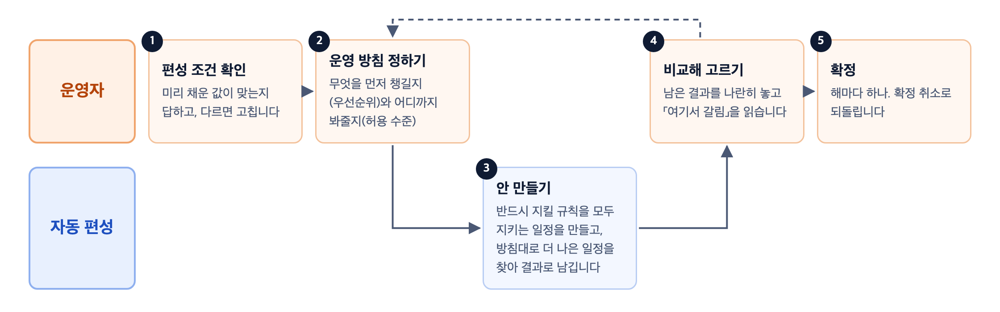
그림 2-1 「자동 편성」과 「운영자」 두 칸에 각자 하는 일 · 설명 그림(화면 아님)
자동 편성이 하는 일
운영자가 하는 일
반드시 지킬 규칙을 모두 지키는 일정을 만듭니다
미리 채워 둔 편성 조건이 맞는지 확인합니다
운영 방침의 순서와 허용 수준에 따라 더 나은 일정을 찾습니다
무엇을 먼저 챙길지(운영 방침) 정합니다
실행할 때마다 결과를 남깁니다
남은 결과를 비교해 하나를 고르고 확정합니다
2.1 자동 편성이 하는 일
반드시 지킬 규칙을 하나도 어기지 않는 일정을 만들고, 그 가운데 운영 방침에 맞는 더 나은 일정을 찾습니다.
반드시 지킬 규칙을 지킵니다
반드시 지킬 규칙은 일정이라면 꼭 갖춰야 하는 조건입니다. 예를 들면 이런 것입니다.
연전 기간마다 모든 구단이 한 번씩 나옵니다.
한 구장에서 같은 기간에 두 경기를 하지 않습니다. 같이 쓰는 구장은 한 곳으로 셉니다.
같은 구단의 홈 또는 원정은 3연속까지입니다.
바로 앞 연전과 같은 대진을 이어서 잡지 않습니다.
운영자가 홈 구단을 정한 날(개막전, 어린이날, 홈 구장을 지정한 날)에는 그 구단이 홈 경기를 합니다.
어느 운영 방침을 고르든 이 규칙은 지킵니다. 전체 목록은 11장 「규칙과 기준 목록」에 있습니다.
운영 방침대로 더 나은 일정을 찾습니다
규칙을 지키는 일정은 셀 수 없이 많습니다. 자동 편성은 그 가운데 운영자가 정한 우선순위와 허용 수준으로 견주어 더 나은 쪽을 찾아갑니다. 견주는 목표는 넷이고, 2.2에서 설명합니다.
실행 시간은 최대 1~5분 가운데 고릅니다. 기본은 2분입니다.
더 나아지지 않으면 최대 시간 전에 먼저 끝납니다.
실행 도중 멈추고 이 결과 쓰기를 누르면 그때까지 찾은 가장 좋은 일정으로 끝납니다.
실행할 때마다 결과를 남깁니다
실행이 끝나면 결과가 저절로 저장되어 실행 결과 비교에 쌓입니다. 이름은 번호·방침·허용 수준으로 저절로 붙습니다(예: 「#0003_이동격차_4회_600km_3점」).
이름을 바꾸지 않은 결과는 최근 8개만 남습니다.
이름을 바꾼 결과는 지우지 않고 남깁니다.
반드시 지킬 규칙을 어긴 결과는 저장하지 않습니다.
2.2 운영자가 정하는 일
운영자는 세 가지를 정합니다. 조건이 맞는지, 무엇을 먼저 챙길지, 어느 결과를 시즌 일정으로 쓸지입니다.
조건: 미리 채운 값이 맞는지 확인합니다
구단 정보, 시즌 기간, 주요 이벤트 일정은 미리 채워져 있습니다. 그 가운데에는 KBO가 아직 발표하지 않아 예상으로 넣은 값이 섞여 있고, 이런 값에는 「추정」 표시가 붙어 있습니다.
「추정」 표시가 붙은 값부터 확인합니다.
맞으면 ✓ 수락, 다르면 수정을 누릅니다.
절차는 4장 「편성 조건 입력·검증」에 있습니다.
방침: 무엇을 먼저 챙길지 정합니다
자동 편성이 견주는 목표는 넷입니다. 앞의 셋은 구단 사이의 격차(가장 많은 구단 − 가장 적은 구단)이고, 마지막 하나는 리그 전체의 합입니다.
목표
무엇을 세나
이동 횟수 격차 줄이기
다른 구장으로 옮겨 간 횟수. 멀고 가까움은 보지 않음
이동 거리 격차 줄이기
옮겨 간 거리를 더한 km. 횟수가 같아도 먼 곳을 오가면 커짐
주말·공휴일 홈 격차 줄이기
홈 연전 날짜마다 매긴 점수의 합. 기본은 토·일 1점, 공휴일 2점, 어린이날 3점
전체 이동 거리 줄이기
10구단이 옮겨 간 거리를 모두 더한 값. 격차가 아니라 합
이 가운데 이동의 격차와 주말·공휴일 홈의 격차는 함께 최소로 만들 수 없습니다. 운영 방침 설명하기 창의 말입니다.
「이동 횟수나 거리를 구단마다 비슷하게 맞추면 주말·공휴일 홈이 고르지 않을 수 있고, 주말·공휴일 홈을 먼저 고르게 나누면 이동 횟수·거리 차이가 벌어질 수 있습니다. 한쪽 격차를 더 줄이려면 다른 쪽을 내줘야 합니다.」
그래서 운영자가 두 가지를 정합니다.
우선순위 — 어느 격차를 먼저 줄일지. 이동 격차 줄이기 우선 (기본)과 주말·공휴일 격차 줄이기 우선 가운데 고르거나, 직접 정하기로 순서를 바꿉니다. 전체 이동 거리는 언제나 마지막 순위입니다.
허용 수준 — 목표마다 「이만큼 격차는 괜찮다」고 정하는 값. 격차가 허용 수준 이하이면 「안」, 크면 「넘음」입니다.
둘은 이렇게 맞물립니다. 역시 설명 창의 말입니다(괄호 안은 지금 고른 방침에 따라 바뀝니다. 아래는 기본 방침일 때입니다).
「1순위(지금 이동 횟수 격차 줄이기)가 허용 수준 안에 들어오면 만족으로 보고, 그때부터 2순위(이동 거리 격차 줄이기)로 결과를 가립니다. 1순위를 넘은 두 결과는 2순위가 아무리 좋아도 1순위를 덜 넘은 쪽을 고릅니다. 즉 허용 수준은 「이 목표는 여기까지만 맞추고 다음 목표로 넘어가라」는 선입니다.」
허용 수준을 넘어도 일정이 못 쓰게 되는 것은 아닙니다. 반드시 지킬 규칙과 달리, 자동 편성은 넘은 만큼을 줄이려 노력하고, 끝까지 못 넘기면 「넘음」인 채로 결과를 냅니다.
절차는 5장 「운영 방침 정하고 실행하기」에 있습니다.
확정: 시즌 일정으로 쓸 것을 고릅니다
방침을 바꿔 가며 몇 번 실행하면 결과가 여럿 쌓입니다. 운영자는 실행 결과 비교에서 결과를 나란히 놓고 하나를 골라 확정합니다.
확정은 해마다 하나입니다. 다른 결과를 확정하면 그쪽으로 바뀝니다.
확정 취소로 되돌릴 수 있습니다.
절차는 7장 「실행 결과 비교와 확정」에 있습니다.
2.3 운영자가 설정하는 것
자동 편성은 운영자가 설정한 것만 압니다. 중계 일정이나 구단 행사 같은 화면 밖의 사정은 설정으로 바꿔 알려 줘야 결과에 들어갑니다.
예를 들면 이렇습니다.
그날 꼭 그 구단이 홈이어야 한다 → 그날에 홈 구장 지정을 합니다.
그날 꼭 그 대진이어야 한다 → 그날에 홈 구장 지정을 하고 대진까지 고정을 고릅니다.
특정 날 구장을 쓸 수 없다(대관 등) → 지원 예정입니다.
설정은 세 갈래입니다.
갈래
무엇인가
화면에서 설정하는 것
잘 설정하는 원칙
사실
이미 정해진 것
구장 위치와 구장 간 거리, 개막일, 올스타 휴식기, 1차 편성 종료일, 쉬는 요일, 공휴일·가중치, 홈 경기 수, 맞대결 경기 수
정확하게. 「추정」 표시부터 확인합니다
지정
꼭 이렇게 되어야 하는 것
개막 2연전 대진, 어린이날 홈, 아무 날의 홈 구장 지정·대진까지 고정, 결과에서 연전 고정
꼭 필요한 것만. 많이 고정할수록 자동 편성이 찾을 여지가 줄고, 너무 많으면 처음부터 다시 짜지 못합니다
방침
무엇을 먼저 챙길지
우선순위 순서, 허용 수준(기본 이동 횟수 4회 · 이동 거리 600km · 주말·공휴일 3점), 실행 시간
기본값으로 한 번 실행 → 결과에서 「넘음」 확인 → 조금씩 바꿔 다시 실행 → 비교
방침을 움직이는 요령
처음에는 기본값으로 실행합니다. 결과 화면 맨 위 방침과 견주기에서 어느 목표가 「넘음」인지 봅니다.
허용 수준은 조금씩 옮깁니다. 좁히면 그 격차는 줄고, 다른 쪽 격차는 커질 수 있습니다.
두 끝을 알아 둡니다. 0으로 두면 그 목표를 반드시 맞추려 하고 다른 목표를 내줍니다. 기본값의 세 배를 넘기면 그 목표는 사실상 보지 않습니다.
3. 처음 한 번 따라 하기
이 장에서 할 수 있는 일2027 편성 조건으로 처음부터 확정까지 한 바퀴를 돌아 봅니다. 운영 방침을 바꾸면 결과가 어떻게 달라지는지, 그 가운데 하나를 고르는 사람이 누구인지 손으로 익힙니다.
한 바퀴는 네 단계입니다. 편성 조건을 검토하고, 운영 방침을 정해 실행하고, 결과를 읽고, 두 결과를 비교해 하나를 확정합니다. 이 장에서는 실행을 두 번 합니다. 한 번은 기본 방침으로, 한 번은 방침을 바꿔서입니다.
절
하는 일
화면 위 단계 띠
3.1
처음 화면에서 새 계획을 시작합니다
—
3.2
편성 조건 네 단계를 검토합니다
1 편성 조건 입력·검증
3.3
기본 방침으로 실행합니다
2 운영 방침·실행
3.4
결과를 읽습니다
3 현재 결과 분석
3.5
방침을 바꿔 다시 실행합니다
2 운영 방침·실행
3.6
두 결과를 비교합니다
4 실행 결과 비교
3.7
하나를 확정합니다
4 실행 결과 비교
시작하기 전에
편성 서버에 연결된 상태여야 합니다. 운영 방침·실행 화면에 「시험용 자동 편성 — 결과가 좋지 않습니다」 표시가 보이면 연결되지 않은 것입니다. 10장 「문제 해결」을 보세요.
실행 시간은 기본값 2분 그대로 둡니다. 자동 편성은 더 나아지지 않으면 그 전에 끝나므로, 보통 1분 35초 안팎에 끝납니다.
결과의 숫자는 실행할 때마다 조금씩 다릅니다. 이 장은 어느 단추를 누르고 어디를 읽는지만 적고, 숫자는 적지 않습니다.
3.1 처음 화면에서 시작하기
처음 화면의 「새 계획 만들기」 카드에서 검토를 시작합니다.
매치봇 스튜디오를 엽니다.
「어떤 작업을 하시겠어요?」 제목 아래 카드 두 개가 보입니다. 결과 확인과 새 계획 만들기입니다.
새 계획 만들기 카드의 2027 줄에서 검토 시작을 누릅니다.
화면 위에 단계 띠가 나타나고, 첫 칸 편성 조건 입력·검증이 켜집니다. 그 안에서 「1 / 4 구단 정보」부터 시작합니다.
그림 3-1 「새 계획 만들기」 카드와 「검토 시작」 단추 · 처음 화면
카드의 네 줄은 앞으로 지날 네 단계입니다. 「추정 3개」, 「추정 2개」처럼 적힌 수가 이번에 확인할 추정값의 수입니다.
3.2 편성 조건 네 단계 검토하기
네 단계를 차례로 지나며, 미리 채운 값이 맞는지 답합니다. 「추정」 표시가 붙은 값은 KBO 발표 전 예상이라 꼭 확인합니다.
이 동안 화면 위 단계 띠 아래에 네 단계 줄(1 구단 정보 · 2 시즌 기간·연전 묶음 · 3 주요 이벤트 일정 · 4 확인)이 하나 더 보이고, 지금 단계에 「지금 여기」가 붙습니다.
각 단계에 처음 들어가면 「따라 하기 1 / 4」 같은 말풍선이 그 단계에서 할 일을 알려 줍니다. 읽고 알겠어요를 누르면 사라집니다. 다시 보려면 네 단계 줄 오른쪽의 따라 하기 다시 보기를 누릅니다.
1단계 구단 정보
구단 정보 구역의 「그 밖에 바뀐 정보가 있나요?」 줄을 읽습니다.
「이미 고쳐 둔 곳: LG·두산 구장 잠실 → 서울 올림픽 주경기장」이라고 적혀 있습니다. 2027년부터 두 구단이 임시로 쓰는 구장입니다.
그 밖에 바뀐 구단 이름·구장·위치가 없으면 ✓ 없어요 — 그대로를 누릅니다.
바로 2단계로 넘어갑니다. 네 단계 줄의 1 구단 정보 칸에 「✓ 그대로 · 10구단」이 붙습니다.
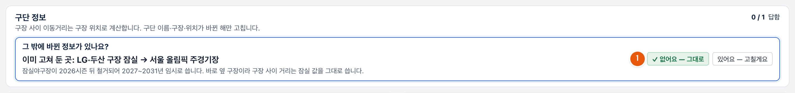
그림 3-2 「그 밖에 바뀐 정보가 있나요?」 줄과 「✓ 없어요 — 그대로」 단추 · 1단계 구단 정보
2단계 시즌 기간·연전 묶음
이 단계에는 「추정」 표시가 붙은 줄마다 ✓ 수락과 수정 단추가 있고, 구역 제목 오른쪽에 「0 / 3 수락」처럼 몇 줄을 수락했는지 보입니다.
줄
표시
할 일
쉬는 요일(월요일)
「2025에서 가져옴」
확인만(수정 단추만 있음)
개막일
「추정 · 확정 아님」
맞으면 ✓ 수락
올스타 휴식기·후반기 첫 4연전
「추정 · 확정 아님」
맞으면 ✓ 수락
1차 편성 종료일
「추정 · 확정 아님」
맞으면 ✓ 수락
홈 경기 수
「규칙대로 자동」
확인만(수정 단추만 있음)
개막일 줄의 날짜와 그 밑 근거를 읽습니다.
근거는 「3월 넷째 토요일에 2연전으로 엽니다(2024 · 2025 · 2026 모두 같음).」입니다.
맞으면 ✓ 수락을 누릅니다.
「추정 · 확정 아님」 표시가 사라지고 단추 자리에 「✓ 수락」 표시가 붙습니다. 「1 / 3 수락」이 됩니다.
올스타 휴식기·후반기 첫 4연전 줄도 같은 방법으로 읽고 ✓ 수락을 누릅니다.
1차 편성 종료일 줄도 같은 방법으로 읽고 ✓ 수락을 누릅니다.
「3 / 3 수락」이 되고, 아래 줄의 다음: 3 주요 이벤트 일정이 눌리게 됩니다.
아래 반영 결과 구역에서 경기일 수와 연전 묶음 수가 채워졌는지 봅니다.
다음: 3 주요 이벤트 일정을 누릅니다.
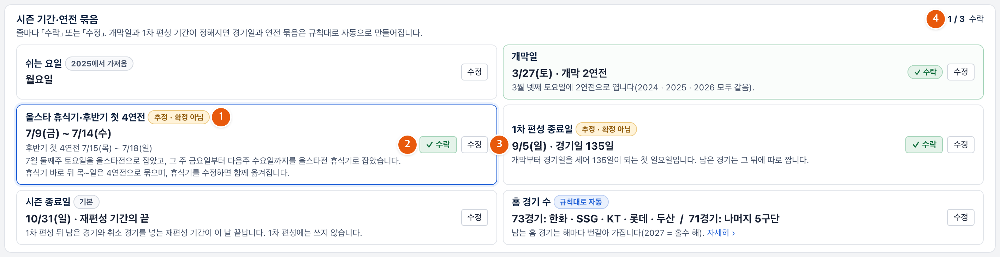
그림 3-3 「추정 · 확정 아님」 표시가 붙은 줄과 「✓ 수락」·「수정」 단추, 오른쪽 위 「n / 3 수락」 · 2단계 시즌 기간·연전 묶음
3단계 주요 이벤트 일정
개막 2연전과 어린이날의 홈 구단은 KBO 공식 발표 전이라, 시범 운영을 위해 예상값으로 설정해 두었습니다. 이 단계에서는 그 값이 지금 알고 있는 것과 맞는지 보고 수락합니다.
주요 일정 구역의 개막 2연전 홈 줄을 봅니다.
홈 구단 다섯 개가 칩으로 놓이고, 칩마다 「vs 상대」와 구장 이름이 보입니다. 홈 구단은 전년도 순위로 정했고, 상대는 예상입니다.
줄의 자세히 ›는 예상값을 어떻게 정했는지 보여 주는 창입니다. 시범 운영을 위한 설정이므로, 발표가 나오면 그 값으로 바꿉니다.
맞으면 ✓ 수락을 누릅니다. 발표된 상대와 다르면 수정을 누릅니다.
어린이날 홈 줄도 같은 방법으로 봅니다. 홈 다섯 구단이 칩으로 보입니다.
맞으면 ✓ 수락을 누릅니다.
「2 / 2 수락」이 됩니다.
공휴일·가중치 줄은 확인만 합니다. 공휴일이 「1차:」와 「2차:」 두 줄로 나뉘어 날짜로 나열됩니다. 이 줄에는 수정 단추만 있습니다.
다음: 4 확인을 누릅니다.
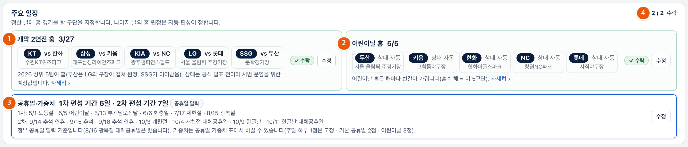
그림 3-4 「주요 일정」 줄 셋과 오른쪽 위 「2 / 2 수락」 · 3단계 주요 이벤트 일정
4단계 확인
구역 제목이 「검토 완료」이고 오른쪽에 「4 / 4 확인」인지 봅니다.
아직 검토하지 않은 단계가 있으면 제목이 「아직 검토할 편성 조건이 남았습니다」입니다. 그 줄의 고치기로 돌아갑니다.
네 줄을 훑어봅니다. 1 구단 정보, 2 시즌 기간·연전 묶음, 3 주요 이벤트 일정, 그리고 시리즈(규칙대로 자동)입니다.
시리즈 줄에 맞대결 경기 수와 그중 1차 편성 경기 수, 홈·원정 수가 보입니다. 네 줄 모두 오른쪽에 고치기가 있어, 누르면 그 단계로 돌아갑니다.
아래 시즌 달력에서 2·3단계에서 정한 날(공휴일, 올스타 휴식기 등)이 시즌 어디쯤인지 봅니다.
다음: 운영 방침·실행을 누릅니다.
단계 띠의 첫 칸에 「완료」가 붙고, 둘째 칸 운영 방침·실행이 켜집니다.
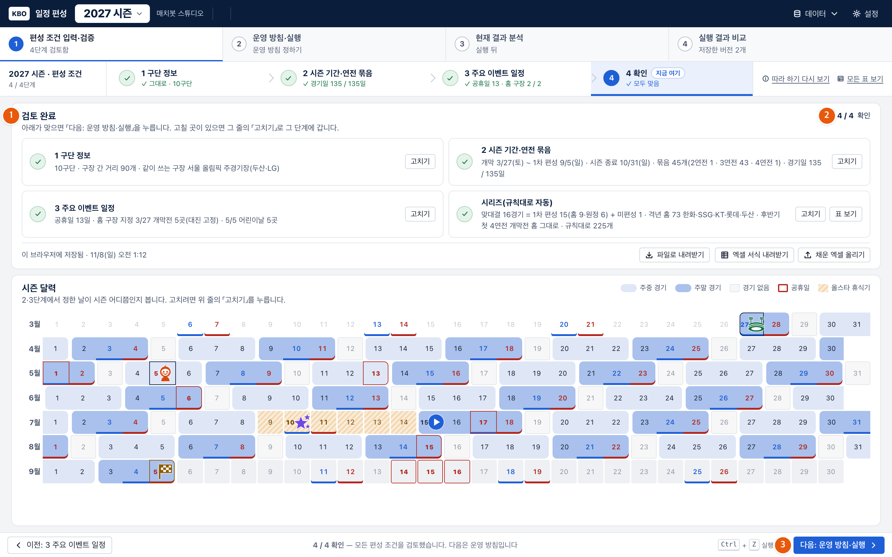
그림 3-5 「검토 완료 · 4 / 4 확인」과 「다음: 운영 방침·실행」 단추 · 4단계 확인
3.3 첫 실행: 기본 방침으로
운영 방침도 실행 시간도 기본값 그대로 두고 실행합니다.
화면 구성은 이렇습니다. 맨 위에 운영 방침 정하기 머리글과 목표 네 칸이 있고, 그 아래에 우선순위(카드 세 장, 오른쪽에 지금 순위), 다시 그 아래에 목표마다 허용 수준이 있습니다. 실행 단추는 화면 맨 아래 줄에 하나 있습니다.
우선순위에서 이동 격차 줄이기 우선 (기본) 카드에 「선택」 표시가 있는지 봅니다.
카드마다 「지키는 것」과 「내주는 것」이 적혀 있습니다. 이 카드는 「이동 횟수·거리 격차를 좁힘」을 지키고, 「주말·공휴일 홈 격차가 벌어질 수 있음」을 내줍니다.
오른쪽 지금 순위 칸에 1순위부터 4순위까지 보입니다. 4순위 전체 이동 거리 줄이기에는 「늘 마지막」이 붙어 있습니다.
목표마다 허용 수준의 세 줄이 기본값인지 봅니다. 이동 횟수 4회, 이동 거리 600km, 주말·공휴일 3점입니다.
주말·공휴일 줄 밑에는 「이 달력은 점수가 10구단에 똑같이 나뉘지 않아, 격차는 가장 좁혀도 1점입니다.」라고 적혀 있습니다.
화면 맨 아래 줄의 실행 시간이 「최대 2 분」인지 봅니다.
이 방침으로 실행을 누릅니다.
화면이 「찾는 중…」으로 바뀌고, 「지금까지 가장 좋은 결과」가 올라올 때마다 아래 숫자가 바뀝니다. 머리글에는 「더 나은 결과가 나오는 대로 받아 옵니다 · 더 나아지지 않으면 최대 시간 전에 끝납니다」라고 적혀 있습니다.
끝날 때까지 기다립니다. 1분 35초 안팎입니다.
끝나면 「실행이 끝났습니다(…). 「#0001_이동격차_4회_600km_3점」(으)로 저장했습니다.」라는 알림이 뜨고, 현재 결과 분석 화면으로 넘어갑니다. 번호는 실행할 때마다 하나씩 늘어나므로 다를 수 있습니다.
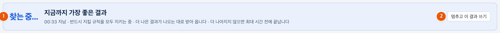
그림 3-6 「찾는 중…」 머리글과 「멈추고 이 결과 쓰기」 단추 · 실행 중 화면
3.4 결과 읽기
현재 결과 분석은 위에서 아래로 읽되, 「요구 사항 점검」을 먼저 봅니다. 반드시 지킬 규칙이 지켜졌는지가 먼저이고, 그다음이 목표별 격차입니다.
화면은 위부터 이렇게 놓여 있습니다.
자리
무엇
읽는 순서
맨 위
방침과 견주기 줄 — 1순위부터 목표마다 「✓ 허용 안」 또는 「✗ n회 넘음」. 오른쪽 끝에 수준 다시 정하기
둘째
둘째 줄
저장한 이름과 단추 요구 사항 점검 · 일정 자세히 보기 · 구단별 보기
—
셋째 줄
요구 사항 점검 요약 — 「요구 사항 n개 모두 지킴」 또는 「요구 사항 n개 어김 — …」
첫째
왼쪽
목표별 격차 — 목표마다 격차와 허용, 「안」·「넘음」 표시. 누른 목표의 구단별 막대
셋째
오른쪽
구단별 한눈에 — 구단마다 이동 횟수·이동 거리·주말·공휴일 홈 점수 등을 한 표에
넷째
셋째 줄의 요구 사항 점검 요약을 읽습니다.
「요구 사항 n개 모두 지킴」이면 됩니다. 이 판정은 서버가 완성된 일정을 날짜별 경기로 풀어 자동 편성의 점수와 따로 센 것입니다.
「어김」이 있으면 점검표 보기 ›로 어느 항목인지 확인합니다. 이 장에서는 보통 나오지 않습니다.
맨 위 방침과 견주기 줄을 읽습니다.
1순위부터 차례로 「✓ 허용 안」인지 「넘음」인지 봅니다. 「넘음」 옆에는 얼마나 넘었는지가 적혀 있습니다.
목표별 격차에서 칸을 하나씩 눌러 봅니다.
누른 목표의 구단별 막대가 네 칸 아래에 바뀌어 보이고, 막대 오른쪽에 「평균과 차이」가 적힙니다. 초록 띠가 「가장 적은 구단 + 허용 수준」이라, 띠를 벗어난 막대가 허용을 넘긴 구단입니다.
구단별 한눈에에서 열 제목을 눌러 줄을 세워 봅니다.
열마다 가장 많은 구단은 주황, 가장 적은 구단은 파랑으로 표시되고, 맨 위 「격차」 줄이 그 둘의 차이입니다.
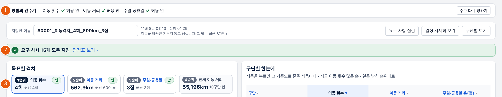
그림 3-7 「방침과 견주기」 줄, 요구 사항 점검 요약, 「목표별 격차」 네 칸 · 현재 결과 분석
이 결과에서 기억해 둘 것은 두 가지입니다. 세 목표가 각각 「안」인지 「넘음」인지, 그리고 주말·공휴일 홈 격차가 몇 점인지입니다. 다음 실행과 견줄 기준입니다.
3.5 방침을 바꿔 다시 실행하기
이번에는 주말·공휴일 홈 격차를 먼저 줄이는 방침으로, 허용 수준도 지금보다 좁혀 실행합니다. 방침에 따라 결과가 어떻게 달라지는지 보려는 것입니다.
화면 맨 아래 줄의 운영 방침 바꿔 다시 실행을 누릅니다.
운영 방침·실행 화면으로 돌아갑니다.
우선순위에서 주말·공휴일 격차 줄이기 우선 카드를 누릅니다.
카드에 「선택」이 붙고, 지금 순위의 1순위가 주말·공휴일 홈 격차 줄이기로 바뀝니다. 머리글의 띠에서 파란 점이 오른쪽으로 옮겨 갑니다.
이 카드는 「주말·공휴일 홈 격차를 좁힘」을 지키고, 「이동 횟수·거리 격차가 벌어질 수 있음」을 내줍니다.
목표마다 허용 수준의 주말·공휴일 홈 격차 줄이기 줄에서 −를 눌러 지금보다 좁힙니다.
첫 실행에서 본 주말·공휴일 격차보다 작은 값으로 둡니다. 그래야 자동 편성이 그 격차를 더 줄이려 합니다.
0까지 내리면 「이 목표를 될 수 있는 한 맞추고 다른 목표를 내줍니다(0은 될 수 없어 1점까지)」라고 안내합니다.
실행 시간이 「최대 2 분」인지 보고, 이 방침으로 실행을 누릅니다.
아래 줄에 「지금 방침: 주말·공휴일 격차 줄이기 우선 · …」이 보입니다.
끝날 때까지 기다립니다. 1분 35초 안팎입니다.
「#0002_주말공휴일_…」(으)로 저장했다는 알림이 뜨고, 현재 결과 분석으로 넘어갑니다.
3.4와 같은 순서로 읽되, 첫 결과와 달라진 곳을 봅니다.
주말·공휴일 홈 격차가 첫 결과보다 줄었는지, 대신 이동 횟수·거리 격차나 전체 이동 거리가 늘었는지 봅니다. 한쪽을 줄이면 다른 쪽을 내준다는 것이 여기서 보입니다.
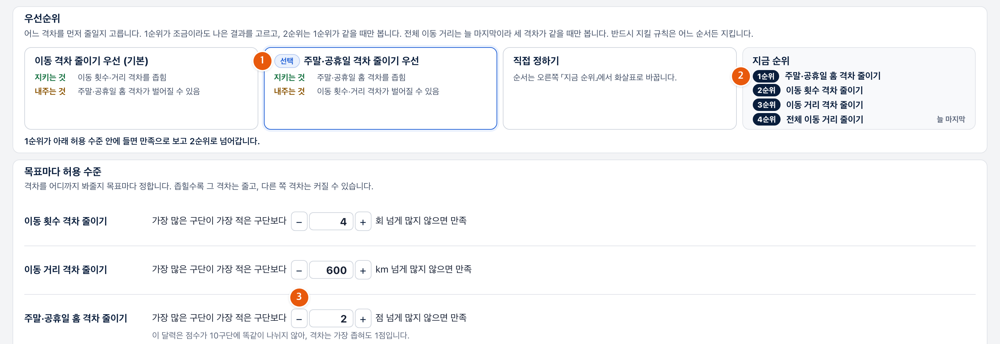
그림 3-8 「주말·공휴일 격차 줄이기 우선」 카드에 「선택」 표시, 그 아래 허용 수준의 주말·공휴일 줄 · 운영 방침·실행
3.6 두 결과 비교하기
실행 결과 비교에서 두 결과를 나란히 놓고, 「여기서 갈림」이 어느 줄에 붙는지 읽습니다. 그 줄이 「왜 이쪽이 위인가」의 답입니다.
화면 맨 아래 줄의 실행 결과 비교를 누릅니다.
위에 저장한 버전 표, 아래에 고른 두 버전 비교가 보입니다.
저장한 버전 표를 봅니다.
지금까지 실행한 결과와 함께 「기본 제공」 표시가 붙은 버전 두 개(「2027 기본안」·「2027 2순위 대진안」)가 늘 같이 줄 섭니다. 방금 실행한 결과에는 「새로」가 붙습니다.
줄은 표 제목 옆 운영 방침 칸에 고른 방침의 순위대로 세워집니다. 처음에는 지금 방침, 곧 두 번째 실행의 방침입니다. 다른 방침으로 만든 버전에는 「다른 방침으로 만듦」 표시가 붙지만, 줄 세우기는 같은 방침으로 합니다.
표 왼쪽의 비교 칸에서 첫 실행 결과(#0001)와 두 번째 실행 결과(#0002)에 표시가 있는지 봅니다.
처음에는 방금 실행한 결과와, 순위가 가장 높은 다른 버전 하나가 미리 골라져 있습니다. #0001이 아닌 다른 버전이 골라져 있으면 그 칸을 눌러 빼고 #0001 칸을 누릅니다.
비교는 두 개까지입니다. 표 위에 「2개 선택 · 새로 고른 것이 파랑」이라고 적혀 있듯, 새로 고른 것이 파랑, 다른 하나가 회색입니다.
아래 고른 두 버전 표를 위에서 아래로 읽습니다.
첫 줄 「요구 사항」은 서버가 다시 센 판정입니다. 둘 다 「n/n 지킴」인지 봅니다.
그 밑에 평가 기준이 1순위부터 줄로 놓입니다. 둘 다 허용 안인 줄에는 「같다고 봄」이 붙고, 처음으로 승부가 갈린 줄에 「여기서 갈림 · 차이」가 붙습니다. 그 아래 줄은 보지 않습니다.
「여기서 갈림」이 붙은 줄을 읽고, 어느 쪽이 그 목표에서 얼마나 앞서는지 봅니다.
두 번째 실행의 방침으로 줄 세웠으니, 1순위 주말·공휴일에서 두 번째 결과가 앞서면 거기서 갈립니다.
운영 방침 칸을 눌러 첫 실행의 방침(「1 이동 횟수 → 2 이동 거리 → 3 주말·공휴일 → 4 전체 이동 거리 · …」)으로 바꿔 봅니다.
같은 두 결과인데 순위가 바뀌거나, 「여기서 갈림」이 다른 줄로 옮겨 갑니다. 어느 결과가 위인지는 결과 자체가 아니라 어느 방침으로 보느냐에 달려 있습니다.
오른쪽 탭 구단별 이동 횟수 · 구단별 이동 거리 · 구단별 주말·공휴일을 하나씩 눌러 두 결과의 구단별 막대를 견줍니다. 처음에는 구단별 이동 거리가 열려 있습니다.
파랑과 회색 막대가 구단마다 나란히 놓이고, 숫자는 「파랑 / 회색」입니다.
그림 3-9 비교 기준 방침을 첫 실행 방침으로 바꾼 뒤의 「고른 두 버전」 표 — 「같다고 봄」과 「여기서 갈림 · 차이」가 붙은 줄 · 실행 결과 비교
허용 수준은 「여기까지면 같다고 본다」는 선입니다. 어느 줄에서 갈리는지는 방침의 순서와 허용 수준에 따라 달라지고, 그래서 방침을 정하는 일이 곧 결과를 고르는 기준을 정하는 일입니다.
3.7 하나를 확정하기
두 결과 가운데 하나를 골라 확정합니다. 확정은 해마다 하나이고, 되돌릴 수 있습니다.
고르기 전에 한 줄로 말해 봅니다. 「n순위까지는 둘 다 허용 안이라 같다고 보았고, ○○에서 이쪽이 앞서 이 버전을 골랐다.」 이 한 줄이 안 나오면 아직 고를 때가 아닙니다. 3.6으로 돌아가 「여기서 갈림」을 다시 읽습니다.
저장한 버전 표에서 고른 버전의 줄 오른쪽 확정을 누릅니다.
1위 줄의 확정은 파란 단추로 늘 보입니다. 다른 줄의 확정은 마우스를 그 줄에 올리면 보입니다. 어느 줄에서 골라도 됩니다.
「「…」을(를) 2027 일정으로 확정할까요? 처음 화면의 결과 확인에 나옵니다.」라고 묻습니다.
확인을 누릅니다.
「「…」을(를) 확정했습니다.」 알림이 뜨고, 그 줄에 「확정」 표시가 붙습니다. 같은 자리의 단추는 확정 취소로 바뀝니다.
처음 화면으로 가 봅니다. 화면 오른쪽 위 데이터 메뉴를 열어 처음 화면으로를 누릅니다.
결과 확인 카드에 2027 줄이 생기고, 확정한 버전 이름과 「확정」 표시가 보입니다. 보기를 누르면 확정 일정을 봅니다.
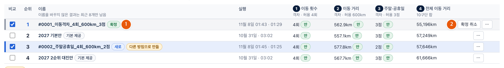
그림 3-10 「확정」 표시가 붙은 줄과 「확정 취소」 단추 · 실행 결과 비교
되돌리려면 확정 취소를 누릅니다. 「「…」 확정을 취소할까요? 결과 확인에서 빠집니다. 버전은 그대로 남습니다.」라고 묻고, 확인하면 「확정을 취소했습니다.」 알림이 뜹니다. 확정만 풀리고 결과는 남습니다.
3.8 한 바퀴를 돌고 나서
운영 방침을 바꾸면 목표별 격차가 다른 결과가 나옵니다. 그 가운데 어느 것을 시즌 일정으로 쓸지는 자동 편성이 정하지 못하므로, 운영자가 고릅니다.
한 일
배운 것
편성 조건 네 단계를 검토했습니다
「추정」 값은 시범 운영용 예상값이므로 확인하고 수락하거나 수정합니다
기본 방침으로 실행했습니다
결과는 요구 사항 점검 → 방침과 견주기 → 목표별 격차 순으로 읽습니다
방침을 바꿔 다시 실행했습니다
한쪽 격차를 줄이면 다른 쪽을 내줍니다
두 결과를 비교했습니다
「여기서 갈림」이 왜 이쪽이 위인지의 답이고, 그 답은 방침에 따라 달라집니다
하나를 확정했습니다
확정은 해마다 하나, 확정 취소로 되돌립니다
평소 일에서도 이 장과 같이 실행하고, 방침을 두 가지보다 더 여러 가지로 바꿔 보며 결과를 쌓습니다. 각 단계의 자세한 절차는 4장부터 7장에 있습니다.
4. 편성 조건 입력·검증
이 장에서 할 수 있는 일네 단계로 나뉜 편성 조건을 하나씩 확인하고, 다른 값을 고치고, 설정마다 무엇이 바뀌는지 압니다.
편성 조건은 미리 채워져 있고, 운영자는 맞는지 답합니다. 네 단계는 구단 정보 → 시즌 기간·연전 묶음 → 주요 이벤트 일정 → 확인입니다. 앞 단계를 마쳐야 다음 단계로 갈 수 있고, 네 단계를 모두 마쳐야 실행할 수 있습니다.
단계
확인하는 것
「추정」
1 구단 정보
구단 이름·구장·위치, 구장 간 거리
—
2 시즌 기간·연전 묶음
쉬는 요일, 개막일, 올스타 휴식기, 1차 편성 종료일, 홈 경기 수
3개
3 주요 이벤트 일정
개막 2연전 홈, 어린이날 홈, 공휴일·가중치, 홈 구장 지정
2개
4 확인
1~3단계 요약과 시리즈 규칙
—
이 장의 설정마다 같은 모양의 설정 상자를 둡니다. 무엇을 정하나 · 기본값 · 바꾸면 얻는 것과 내주는 것 · 언제 바꾸나 · 결과에서 확인하는 곳입니다.
공통 조작
각 단계 아래 줄의 다음: n …으로 다음 단계로, 이전: n …으로 앞 단계로 갑니다. 이 단계의 조건을 다 확인하지 않으면 다음이 눌리지 않습니다.
2·3단계의 줄마다 ✓ 수락 또는 수정이 있습니다. 수정은 그 줄 안에 입력칸을 펼치거나(2단계), 달력에서 고치는 화면으로 갑니다(3단계).
단계마다 처음 들어가면 「따라 하기 n / 4」 말풍선이 나옵니다. 알겠어요로 닫고, 따라 하기 다시 보기로 다시 봅니다.
4.1 1단계 구단 정보
구단 이름·구장·위치가 작년과 달라진 해만 고칩니다. 구장 사이 이동 거리는 구장 위치로 계산하므로, 구장이 바뀌면 위치를 다시 찾아야 합니다.
화면은 셋으로 나뉩니다. 위에 「그 밖에 바뀐 정보가 있나요?」 줄, 아래 왼쪽에 구단·구장 표, 오른쪽에 구장 간 거리표(왼쪽 = 출발 구단, 위 = 도착 구단, 먼 거리는 주황 칸)와 그 밑 구장 지도(펼치기)입니다.
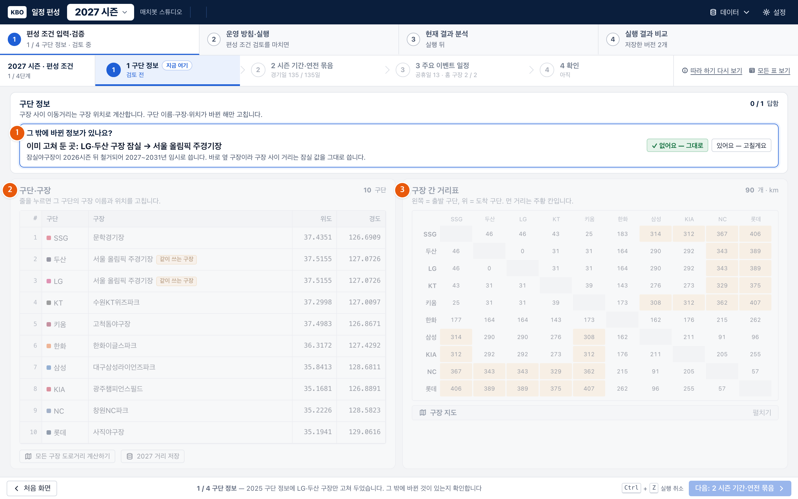
그림 4-1 1단계 전체 — 위 「그 밖에 바뀐 정보가 있나요?」, 왼쪽 구단·구장 표, 오른쪽 구장 간 거리표 · 1단계 구단 정보
그 밖에 바뀐 정보가 있나요?
「이미 고쳐 둔 곳: LG·두산 구장 잠실 → 서울 올림픽 주경기장」을 읽습니다.
잠실야구장을 쓰지 못하는 동안(2027~2031년) 두 구단이 임시로 쓰는 구장입니다. 바로 옆 구장이라 구장 사이 거리는 잠실 값을 그대로 씁니다.
그 밖에 없으면 ✓ 없어요 — 그대로를 누릅니다. 바로 2단계로 갑니다.
있으면 있어요 — 고칠게요를 누릅니다.
단추가 「있어요 — 고치는 중」으로 바뀌고, 「따라 하기 1 / 3」 말풍선이 고치는 법을 차례로 안내합니다(바뀐 구단을 고르세요 → 새 구장 이름을 적고 Enter → 다른 구장까지 거리 확인). 건너뛰기로 다음 말풍선, 마지막의 마치기로 닫습니다.
답을 바꾸려면 다시 고르기를 누릅니다.
구단 하나 고치기
구단·구장 표에서 그 구단의 줄을 누릅니다.
표 아래에 「고치기 (구단 이름)」 카드가 열립니다. 왼쪽에 구단명, 구장 (Enter = 위치 찾기), 읽기 전용 위도·경도, 지도에서 찍기가 있고, 오른쪽에 「(구단 이름)에서 다른 구장까지 거리」와 도로거리 받기가 있습니다. 카드는 오른쪽 위 ×로 닫습니다.
구장 칸에 구장 이름을 적고 Enter를 누릅니다.
위치를 찾아 위도·경도를 채웁니다. 하나면 바로 채우고, 여럿이면 목록에서 고르고, 못 찾으면 「「…」을(를) 찾지 못했습니다」라고 알려 줍니다. 이때 구장 이름은 아직 바뀌지 않습니다.
위도·경도는 직접 적지 않습니다. 구장 이름으로 찾거나 지도에서 찍기로 지도의 한 점을 눌러 넣습니다.
오른쪽 거리 칸을 확인합니다.
구장 위치가 바뀌면 이 구단의 구장 간 거리를 직선거리로 다시 추정하고, 도로거리를 자동으로 다시 받습니다. 「도로」는 길찾기(자동차)로 받은 도로거리, 「추정」은 직선거리에 도로계수를 곱한 값입니다. 도로거리 받기로 다시 받을 수 있습니다.
거리 칸은 직접 고칠 수도 있습니다. 숫자를 고치고 Enter를 누르면 직접 적은 값이 됩니다. 이 카드에서 고치면 그 구단에서 가는 길만 바뀝니다. 오는 길은 상대 구단을 골라 그 카드에서 고칩니다.
모든 구장의 도로거리를 한꺼번에 다시 받으려면 구단·구장 표 아래 모든 구장 도로거리 계산하기를 누릅니다.
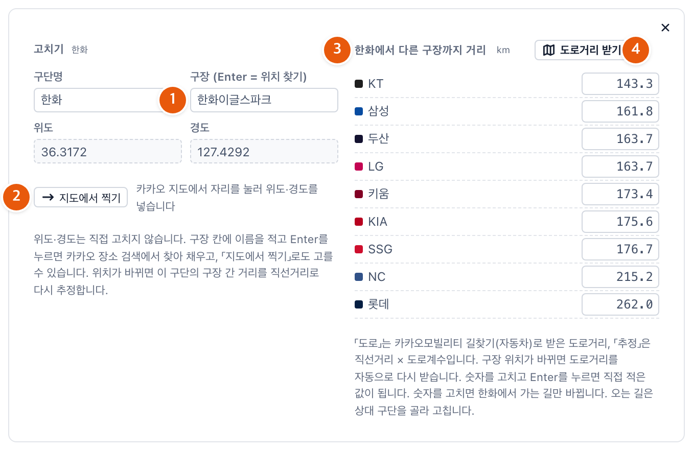
그림 4-2 구단 고치기 카드 — 구장 칸, 「지도에서 찍기」, 거리표와 「도로거리 받기」 · 1단계 구단 정보
설정 상자
구단·구장·위치, 구장 간 거리
무엇을 정하나
10구단의 이름, 홈 구장, 구장 위치(위도·경도), 구장 사이 거리(km)
기본값
2025 구단 정보에 LG·두산 구장만 고친 것. 같은 구장을 쓰는 구단은 한 구장으로 셉니다
바꾸면
구장 위치가 바뀌면 그 구단과 관련된 모든 이동 거리가 바뀝니다. 거리가 틀리면 이동 거리 격차와 전체 이동 거리를 잘못 셉니다
언제 바꾸나
구장이 바뀌거나 새로 생긴 해. 거리가 실제와 다르다고 알게 됐을 때
결과에서 확인
현재 결과 분석 → 목표별 격차의 이동 거리, 구단별 보기의 총 이동거리
4.2 2단계 시즌 기간·연전 묶음
개막일과 1차 편성 종료일이 정해지면 경기일과 연전 묶음은 규칙대로 자동으로 만들어집니다. 운영자는 날짜가 맞는지 확인합니다.
위 구역 시즌 기간·연전 묶음에 줄 다섯이 있고, 오른쪽에 「n / 3 수락」이 보입니다. 아래 구역 반영 결과에 경기일 수, 연전 묶음 수(3연전·2연전·4연전), 기간이 보이고 시즌 달력이 있습니다. 편성 조건을 수정하면 바로 다시 셉니다.
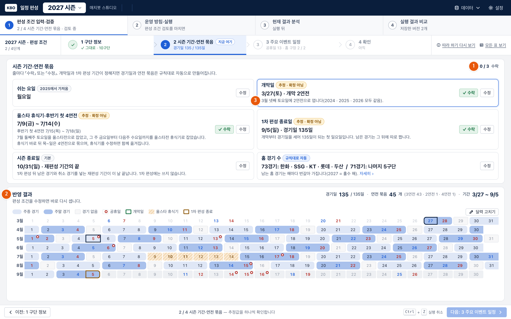
그림 4-3 2단계 전체 — 위 줄 다섯과 「n / 3 수락」, 아래 「반영 결과」와 달력 · 2단계 시즌 기간·연전 묶음
줄
표시
고치는 곳
쉬는 요일
「2025에서 가져옴」
수정 → 요일 단추(일~토)
개막일
「추정 · 확정 아님」
수정 → 토요일 목록
올스타 휴식기·후반기 첫 4연전
「추정 · 확정 아님」
수정 → 시작(금)·길이(일)
1차 편성 종료일
「추정 · 확정 아님」
수정 → 날짜
시즌 종료일
「기본」
수정 → 날짜
홈 경기 수
「규칙대로 자동」
수정 → 홈 73 구단 단추
「추정 · 확정 아님」 줄은 ✓ 수락을 누르면 표시가 「✓ 수락」으로 바뀝니다. 수정은 그 줄 안에 입력칸을 펼치고, 다시 누르거나 닫기를 누르면 접힙니다.
쉬는 요일
설정 상자
쉬는 요일
무엇을 정하나
경기를 하지 않는 요일
기본값
월요일
바꾸면
경기일 수가 바뀌어 1차 편성 종료일과 연전 묶음이 다시 계산됩니다
언제 바꾸나
휴식 요일이 달라진 해. 거의 바꾸지 않습니다
결과에서 확인
일정 자세히 보기의 달력에서 그 요일이 비어 있는지
휴식 요일에 든 공휴일에 경기를 할지는 3단계 공휴일 표의 「월 경기」에서 정합니다.
개막일
개막일 줄의 날짜와 근거를 읽습니다.
근거: 「3월 넷째 토요일에 2연전으로 엽니다(2024 · 2025 · 2026 모두 같음).」
맞으면 ✓ 수락, 다르면 수정을 누릅니다.
「2027 시즌 개막일은 언제인가요?」와 토요일 목록이 펼쳐집니다. 「추천 · 3월 넷째 토요일」이 붙은 날과 앞뒤 토요일 가운데 고르거나, 다른 날…을 눌러 날짜(예: 4/3)를 적고 Enter를 누릅니다. 토요일만 됩니다. 바꾸지 않으려면 그대로 두기를 누릅니다.
고르면 1차 편성 종료일·올스타 휴식기·연전 묶음이 규칙대로 다시 채워집니다.
설정 상자
개막일
무엇을 정하나
시즌 첫 경기일. 개막은 토·일 2연전
기본값
3월 넷째 토요일
바꾸면
시즌 전체가 당겨지거나 밀립니다. 연전 묶음이 다시 만들어져 전 결과는 쓸 수 없습니다
언제 바꾸나
KBO가 개막일을 발표했을 때
결과에서 확인
일정 자세히 보기의 달력 첫 주
올스타 휴식기·후반기 첫 4연전
줄의 기간과 그 밑 「후반기 첫 4연전 …」을 읽습니다.
근거: 「7월 둘째주 토요일을 올스타전으로 잡았고, 그 주 금요일부터 다음주 수요일까지를 올스타전 휴식기로 잡았습니다. 휴식기 바로 뒤 목~일은 4연전으로 묶으며, 휴식기를 수정하면 함께 옮겨집니다.」
맞으면 ✓ 수락, 다르면 수정을 누릅니다.
시작(금)과 길이(일)를 적습니다. 뒤 목~일은 4연전이 됩니다.
설정 상자
올스타 휴식기
무엇을 정하나
경기가 없는 기간의 시작 날짜와 길이
기본값
7월 둘째 금요일부터 6일
바꾸면
휴식기와 후반기 첫 4연전이 함께 옮겨지고, 경기일 수가 바뀌어 1차 편성 종료일이 다시 계산됩니다
언제 바꾸나
올스타전 날짜가 발표됐을 때
결과에서 확인
일정 자세히 보기의 달력 7월, 요구 사항 점검의 연전 기간 표
1차 편성 종료일
설정 상자
1차 편성 종료일
무엇을 정하나
1차 편성으로 짜는 마지막 날. 그 뒤는 남은 경기와 취소 경기를 넣는 재편성 기간
기본값
자동 — 개막부터 경기일을 세어 필요한 날 수(1차 편성 경기 수로 계산)가 되는 첫 일요일
바꾸면
그 날까지 연전 묶음을 다시 깝니다. 날짜를 직접 적으면 줄에 「직접 고침」이 붙고, 수정 칸에 자동으로(경기일 n일이 되는 첫 일요일) 단추가 생깁니다. 누르면 다시 자동
언제 바꾸나
거의 바꾸지 않습니다. 1차 편성 경기 수를 바꾸면 자동으로 따라갑니다
결과에서 확인
반영 결과의 경기일 수가 필요한 수와 같은지
시즌 종료일
이 줄에는 ✓ 수락이 없습니다. 1차 편성에는 쓰지 않는 값이라 확인만 합니다.
설정 상자
시즌 종료일
무엇을 정하나
재편성 기간의 끝. 1차 편성 뒤 남은 경기와 취소 경기를 이 날까지 넣습니다
기본값
10월 31일
바꾸면
재편성 기간이 늘거나 줄어듭니다. 1차 편성 결과에는 영향이 없습니다
언제 바꾸나
시즌 마감일이 정해졌을 때. 시즌 중 다시 짜기(8장)가 들어오면 그때 씁니다
결과에서 확인
4단계 확인의 2 시즌 기간·연전 묶음 줄 「시즌 종료 …」
홈 경기 수
설정 상자
홈 경기 수(격년 홈 73 / 71)
무엇을 정하나
홈 73경기를 하는 다섯 구단과 71경기를 하는 다섯 구단
기본값
2027은 홀수 해 기준. 근거: 「남는 홈 경기는 해마다 번갈아 가집니다(2027 = 홀수 해).」
바꾸면
구단마다 홈 경기 수가 바뀝니다. 1차 편성 홈 경기 수는 자동으로 맞춥니다
언제 바꾸나
홀수·짝수 해가 바뀌면 자동으로 반대가 됩니다. KBO 방식이 달라졌을 때만
결과에서 확인
요구 사항 점검 → 시즌 합계의 구단별 홈 경기 수
자세히 ›를 누르면 「2027 홈 경기 수 근거」 창이 열립니다. 수정을 누르면 줄 안에 「격년 홈 73 / 71경기」 칸이 펼쳐집니다. 구단 단추를 눌러 홈 73 구단 다섯을 고르고(「홈 73 구단 n / 5곳」), 쓰지 않기로 격년 홈을 끌 수 있습니다. 같은 칸이 4단계 시리즈 규칙의 고치기에도 있습니다.
달력 고치기: 연전 묶음
연전 묶음은 규칙대로 만들어지지만, 특정 기간만 다르게 묶고 싶으면 달력에서 직접 고칩니다.
반영 결과 구역 달력 위의 달력 고치기를 누릅니다.
달력 위에 「날짜를 끌면 연전 묶음 · 묶음을 누르면 바꾸기·나누기·지우기」가 보입니다.
날짜를 끌면 2·3·4연전 묶음을 만듭니다.
묶음을 누르면 창이 열립니다. 연전 수(2연전 · 3연전 · 4연전)를 바꾸거나, 둘로 나누기 (2+2)(4연전만), 묶음 지우기를 할 수 있습니다.
창에 바꾸면 경기일이 어떻게 되는지 적힙니다(예: 「2연전으로 바꾸면 …이 경기 없는 날이 되어 경기일 합이 134일이 됩니다.」).
고치기 끝을 누릅니다.
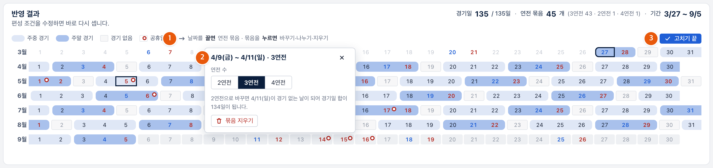
그림 4-4 「달력 고치기」 상태의 달력 — 날짜를 끌어 묶음 만들기, 묶음을 누른 창 · 2단계 시즌 기간·연전 묶음
4.3 3단계 주요 이벤트 일정
정한 날에 홈 경기를 할 구단을 지정합니다. 나머지 날의 홈·원정은 자동 편성이 정합니다.
위 구역 주요 일정에 줄 셋이 있고, 오른쪽에 「n / 2 수락」이 보입니다. 아래 시즌 달력에서 공휴일과 홈 구장을 지정한 날이 시즌 어디쯤인지 봅니다. 날을 누르면 달력에서 고치는 화면으로 갑니다.
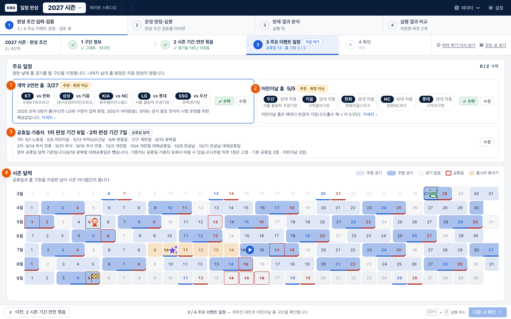
그림 4-5 3단계 전체 — 「주요 일정」 줄 셋과 시즌 달력 · 3단계 주요 이벤트 일정
개막 2연전 홈
줄의 홈 구단 다섯 칩과 「vs 상대」를 봅니다.
홈 구단은 전년도 상위 5구단(잠실을 같이 쓰는 두 구단은 하나만)이고, 상대는 공식 발표 전이라 시범 운영을 위해 예상으로 넣은 값입니다. 자세히 ›를 누르면 어떻게 정했는지 보여 줍니다.
맞으면 ✓ 수락, 상대가 다르면 수정을 누릅니다.
달력에서 고치는 화면이 열리고, 오른쪽 고른 날 · 3/27(토) 칸에 「홈 구단은 고정입니다 — 전년도 순위로 정해집니다. 상대 구단만 고칠 수 있습니다.」가 보입니다. 홈 구단 단추는 눌리지 않습니다.
아래 대진(원정 @ 홈)에서 홈 구단마다 상대를 고릅니다.
다섯 상대를 모두 골라야 합니다. 비운 칸이 있으면 「대진의 상대를 모두 고릅니다.」가 보이고, 3단계 줄에는 「상대 자동」이 보이며 다음: 4 확인이 눌리지 않습니다.
홈 = 전년도 상위 5구단(잠실을 같이 쓰는 두 구단은 하나만). 상대 = 발표 전 예상값(시범 운영용)
바꾸면
상대를 바꾸면 그 시리즈가 고정되고, 후반기 첫 4연전(같은 두 구단이 다시 만남)도 따라 바뀝니다
언제 바꾸나
KBO 발표(보통 12월 중순)에서 상대가 다를 때
결과에서 확인
일정 자세히 보기의 달력 첫 주, 요구 사항 점검의 「개막 연전」 줄
어린이날 홈
설정 상자
어린이날 홈
무엇을 정하나
5월 5일 홈 경기를 하는 다섯 구단
기본값
홀수 해 묶음(해마다 번갈아 맡음). 두산·LG 가운데 하나만. 발표 전 예상값(시범 운영용)
바꾸면
그 날 그 구단이 홈이 되도록 자동 편성이 지킵니다. 상대는 자동 편성이 정합니다
언제 바꾸나
KBO 발표가 다를 때
결과에서 확인
일정 자세히 보기의 달력 5월 5일, 요구 사항 점검의 어린이날 줄
자세히 ›를 누르면 어떻게 정했는지 보여 줍니다. 수정은 달력에서 고치는 화면으로 가고, 고른 날 · 5/5(수) 칸에서 구단 단추를 눌러 다섯 곳을 고릅니다(「5 / 5곳」). 어린이날은 다섯 곳을 모두 골라야 합니다. 두산·LG는 같은 구장이라 하나만 고릅니다.
공휴일·가중치
이 줄에는 ✓ 수락이 없습니다. 1차 편성 기간과 2차 편성 기간의 공휴일이 「1차:」「2차:」 두 줄로 나열되고, 「정부 공휴일 달력 기준입니다」라고 적혀 있습니다. 고치려면 수정을 누릅니다.
수정을 누릅니다.
달력에서 고치는 화면이 열리고, 왼쪽에 1 공휴일과 가중치 표가 있습니다. 열은 날짜 · 이름 · 가중치 · 월 경기입니다.
가중치를 바꾸려면 그 줄의 숫자를 고칩니다. 0~10 사이의 정수만 됩니다(벗어나면 「가중치는 0~10 정수입니다(주말 하루 = 1).」).
줄을 더하려면 표 제목 오른쪽 줄 추가를 누릅니다.
「임시 공휴일」 줄이 하나 생기고 「… 「임시 공휴일」 줄을 넣었습니다. 날짜·이름·가중치를 고치세요. 연전 묶음은 그대로입니다.」라고 알려 줍니다. 그 줄의 날짜·이름·가중치를 고칩니다.
빼려면 줄 끝의 ×를 누릅니다. 표가 비어 있으면 2027년 법정 공휴일 채우기로 한 번에 채웁니다.
표에는 1차 편성 기간의 공휴일만 보입니다. 시즌 앞과 재편성 기간의 공휴일은 표 아래 「1차 편성 기간 밖(시즌 앞·재편성 기간) 공휴일 n일 더 보기」를 누르면 보입니다.
휴식 요일(월)에 든 공휴일에 경기를 하려면 그 줄의 「월 경기」를 켭니다. 휴식 요일이 아닌 공휴일 줄에는 「—」만 있습니다.
켜면 그 주 목요일이 휴식일이 됩니다. 켜고 끌 때 「묶음에 반영할까요?」라고 묻습니다.
검토로 돌아가기를 누릅니다.
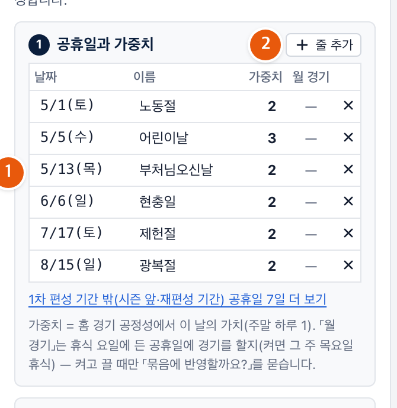
그림 4-6 「1 공휴일과 가중치」 표 — 날짜·이름·가중치·월 경기 열, 「줄 추가」 · 달력에서 수정
설정 상자
공휴일·가중치
무엇을 정하나
공휴일 날짜와, 그 날 홈 경기의 가치(점). 주말 하루는 1점으로 고정
기본값
정부 공휴일 달력. 공휴일 2점, 어린이날 3점. 0~10
바꾸면
주말·공휴일 홈 격차 줄이기가 세는 점수가 바뀝니다. 한 날의 가중치를 크게 하면 그 날 홈을 누가 맡느냐가 격차를 크게 움직입니다
언제 바꾸나
임시 공휴일이 생겼을 때, 특정 공휴일을 더 무겁게 보려 할 때
결과에서 확인
목표별 격차의 주말·공휴일 홈, 구단별 보기의 「공휴일 홈」
홈 구장 지정: 아무 날이나
개막전·어린이날 말고도, 특정 날에 특정 구단이 홈이어야 하면 그 날에 홈 구장을 지정합니다.
3단계 아래 시즌 달력에서 그 날을 누릅니다.
달력에서 고치는 화면이 열리고, 오른쪽 고른 날 · (날짜) 칸에 그 날의 연전과 홈 구장 지정 스위치가 나옵니다.
홈 구장 지정을 켭니다.
구단 단추 열 개가 나옵니다.
그 날 홈이어야 하는 구단을 누릅니다. 하루 5곳까지입니다.
칸 위에 「n / 5곳」이 보이고, 5곳보다 적으면 「n곳 더 고를 수 있습니다」가 보입니다. 다만 개막전·어린이날이 아닌 날은 고른 구단만 홈으로 지키므로, 그 날 꼭 홈이어야 하는 구단만 골라도 됩니다.
같은 구장을 쓰는 두 구단은 하나만 고릅니다(「서울 올림픽 주경기장은 두산·LG 중 하나만 고릅니다.」).
구단을 고르면 방식 단추가 나옵니다. 대진까지 고정 또는 홈 구장만 지정입니다. 처음에는 홈 구장만 지정입니다.
홈 구장만 지정: 「이 날 홈 경기를 해야 하는 구단을 고릅니다(5곳까지). 상대는 자동 편성이 정합니다.」
대진까지 고정: 「이 날 홈 구단 5곳과 상대까지 정합니다. 자동 편성은 그 시리즈를 고정합니다.」 아래 대진(원정 @ 홈)에서 홈 구단마다 상대를 고릅니다.
왼쪽 2 홈 구장 지정 목록에서 지정한 날이 「n곳」 또는 「n곳 · 대진」으로 보이는지 확인합니다. 아직 다 고르지 않았으면 「고르는 중 n / 5」입니다.
지정을 지우려면 그 날을 다시 누르고 홈 구장 지정을 끕니다.
검토로 돌아가기를 누릅니다.
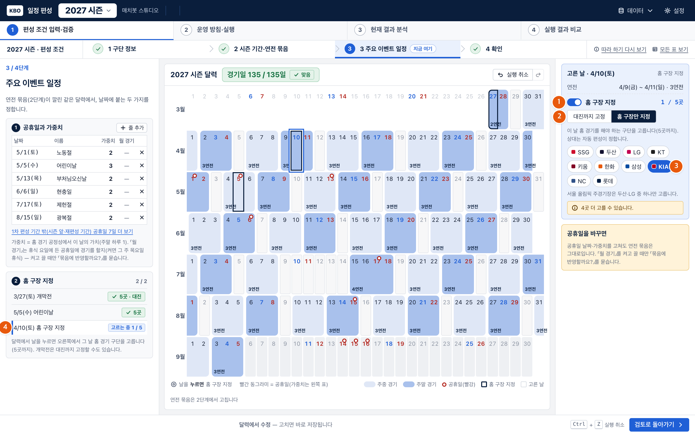
그림 4-7 달력에서 날을 고른 상태 — 오른쪽 「고른 날」 칸의 「홈 구장 지정」 스위치, 「대진까지 고정」/「홈 구장만 지정」과 구단 단추, 왼쪽 「2 홈 구장 지정」 목록 · 달력에서 수정
설정 상자
홈 구장 지정
무엇을 정하나
특정 날 홈 경기를 할 구단(5곳까지). 대진까지 정할 수도 있음
기본값
개막전·어린이날만
바꾸면
반드시 지킬 규칙이 됩니다. 어느 방침으로 실행해도 지킵니다. 지정이 많을수록 자동 편성이 찾을 여지가 줄어 격차가 커질 수 있습니다
언제 바꾸나
그날 꼭 그 구단이 홈이어야 할 때(행사 등), 그날 꼭 그 대진이어야 할 때
결과에서 확인
일정 자세히 보기의 달력 그 날, 요구 사항 점검의 「정한 홈」·「정한 대진」 줄
4.4 4단계 확인
1~3단계 요약과 시리즈 규칙을 한 화면에서 봅니다. 모두 맞으면 다음: 운영 방침·실행을 누릅니다.
구역 제목은 모두 확인했으면 「검토 완료」, 아니면 「아직 검토할 편성 조건이 남았습니다」이고, 오른쪽에 「n / 4 확인」이 보입니다.
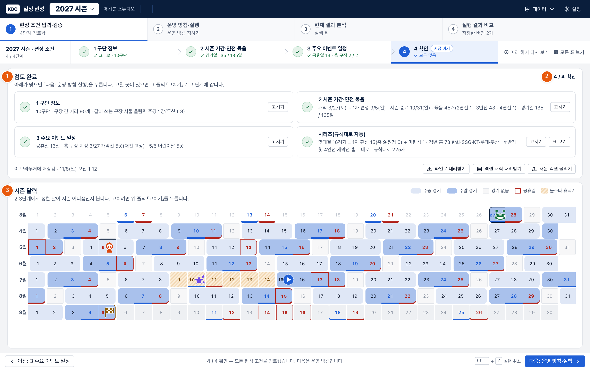
그림 4-8 「검토 완료 · 4 / 4 확인」과 줄 넷, 아래 시즌 달력 · 4단계 확인
줄
보이는 것
고치기
1 구단 정보
구단 수, 구장 간 거리 수, 같이 쓰는 구장
고치기 → 1단계
2 시즌 기간·연전 묶음
개막·1차 편성·시즌 종료 날짜, 묶음 수
고치기 → 2단계
3 주요 이벤트 일정
공휴일 수, 홈 구장 지정
고치기 → 3단계
시리즈(규칙대로 자동)
맞대결 경기 수, 1차 편성 경기 수와 홈·원정, 격년 홈, 후반기 첫 4연전 홈
고치기 → 이 자리에 시리즈 규칙 칸이 펼쳐짐(닫기로 접음)
시리즈 규칙
시리즈 규칙은 맞대결마다 몇 경기를 하고 그중 몇 경기를 1차 편성에 넣는지입니다. 거의 바꾸지 않습니다. 시리즈(규칙대로 자동) 줄의 고치기를 누르면 입력칸과 「격년 홈 73 / 71경기」 칸이 펼쳐집니다.
설정 상자
시리즈 규칙
무엇을 정하나
맞대결(구단 짝마다 경기 수), 그중 1차 편성, 1차 편성 홈(많은 쪽), 연전 최소 길이, 후반기 첫 4연전 홈
기본값
맞대결 16, 그중 1차 편성 15, 1차 편성 홈 9, 연전 최소 길이 3, 후반기 첫 4연전 홈은 「개막전 홈 구단 그대로」
바꾸면
1차 편성 경기 수를 바꾸면 필요한 경기일이 바뀌어 1차 편성 종료일이 다시 계산됩니다. 「홈 바꿈」이면 후반기 첫 4연전을 상대 구장에서 합니다
언제 바꾸나
리그 경기 수 방식이 달라진 해
결과에서 확인
일정 자세히 보기 → 상대별 경기 수 탭의 판정 줄 「모든 맞대결이 n경기(홈 · 원정)로 고릅니다」
4.5 검토를 마친 뒤
아래 줄 다음: 운영 방침·실행을 누르면 단계 띠의 둘째 칸으로 갑니다. 5장.
나중에 편성 조건을 고치려면 단계 띠의 편성 조건 입력·검증을 누릅니다. 4단계 확인 화면이 열리고, 각 줄의 고치기로 그 단계에 갑니다.
고친 뒤에는 다시 실행해야 결과에 반영됩니다. 처음 화면에 「고쳤다면 검토 후 다시 실행합니다」라고 적혀 있습니다.
5. 운영 방침 정하고 실행하기
이 장에서 할 수 있는 일우선순위와 허용 수준을 정해 실행하고, 실행 중 화면을 읽고, 어떤 설정이 결과를 어떻게 움직이는지 압니다.
운영 방침은 두 가지로 이루어집니다. 어느 격차를 먼저 줄일지(우선순위)와 목표마다 어디까지 봐줄지(허용 수준)입니다. 여기에 실행 시간을 정해 이 방침으로 실행을 누릅니다.
운영 방침·실행 화면은 단계 띠의 둘째 칸입니다. 편성 조건 네 단계를 마쳐야 들어갈 수 있습니다.
자리
무엇
맨 위
운영 방침 정하기 머리글, 지금 방침의 자리를 보여 주는 띠, 목표 네 칸
가운데
우선순위 — 방침 카드 둘과 직접 정하기, 오른쪽에 지금 순위
그 아래
목표마다 허용 수준 — 세 줄
맨 아래 줄
「지금 방침: …」, 실행 시간 「최대 n 분」, 이 방침으로 실행
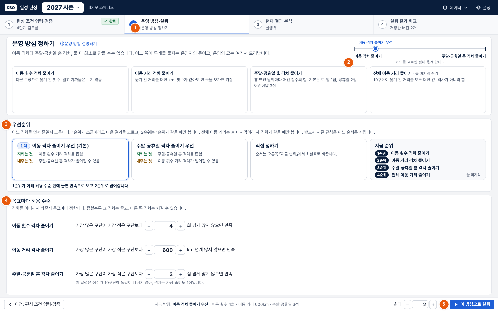
그림 5-1 운영 방침·실행 전체 — 머리글과 띠, 우선순위, 그 아래 허용 수준, 아래 줄 실행 단추 · 운영 방침·실행
머리글의 말을 먼저 읽습니다. 「이동 격차와 주말·공휴일 홈 격차, 둘 다 최소로 만들 수는 없습니다. 어느 쪽에 무게를 둘지는 운영자의 몫이고, 운영의 묘는 여기서 드러납니다.」 자세한 설명은 머리글 오른쪽 운영 방침 설명하기를 누르면 오른쪽에 열립니다. 읽으면서 방침을 만질 수 있습니다.
5.1 목표 네 개
앞의 셋은 구단 사이 격차이고 허용 수준이 있습니다. 전체 이동 거리는 리그 전체의 합이고 허용 수준이 없으며 언제나 마지막 순위입니다.
목표
무엇을 세나
격차
이동 횟수 격차 줄이기
다른 구장으로 옮겨 간 횟수. 멀고 가까움은 보지 않음
가장 많이 옮긴 구단 − 가장 적게 옮긴 구단
이동 거리 격차 줄이기
옮겨 간 거리를 더한 km. 횟수가 같아도 먼 곳을 오가면 커짐
가장 긴 구단 − 가장 짧은 구단
주말·공휴일 홈 격차 줄이기
홈 연전 날짜마다 매긴 점수의 합. 기본은 토·일 1점, 공휴일 2점, 어린이날 3점
가장 높은 구단 − 가장 낮은 구단
전체 이동 거리 줄이기
10구단이 옮겨 간 거리를 모두 더한 값. 격차가 아니라 합
—
세는 법은 운영 방침 설명하기 창에 있습니다. 이동 횟수는 「앞 연전과 다른 구장에서 다음 연전을 하면 1회로 셉니다. 같은 구장에서 이어지면 0회입니다」. 주말·공휴일 점수는 「공휴일이 주말과 겹치면 큰 쪽 하나만」이고 「원정은 0점입니다」.
5.2 우선순위
어느 격차를 먼저 줄일지 고릅니다. 1순위가 조금이라도 나은 결과를 고르고, 2순위는 1순위가 같을 때만 봅니다. 반드시 지킬 규칙은 어느 순서든 지킵니다.
카드 둘 가운데 하나를 누릅니다.
누른 카드에 「선택」이 붙고, 머리글 띠의 파란 점이 그쪽으로 옮겨 갑니다(「카드를 고르면 점이 옮겨 갑니다」). 오른쪽 지금 순위에 1~4순위가 보입니다.
카드
지키는 것
내주는 것
순위
이동 격차 줄이기 우선 (기본)
이동 횟수·거리 격차를 좁힘
주말·공휴일 홈 격차가 벌어질 수 있음
이동 횟수 → 이동 거리 → 주말·공휴일 → 전체 이동 거리
주말·공휴일 격차 줄이기 우선
주말·공휴일 홈 격차를 좁힘
이동 횟수·거리 격차가 벌어질 수 있음
주말·공휴일 → 이동 횟수 → 이동 거리 → 전체 이동 거리
다른 순서를 원하면 직접 정하기를 누릅니다.
지금 순위에 ▲▼ 화살표가 붙습니다(「순서는 오른쪽 「지금 순위」에서 화살표로 바꿉니다.」). 1~3순위만 바꿀 수 있고, 4순위 전체 이동 거리 줄이기에는 「늘 마지막」이 붙어 움직이지 않습니다.
아래 줄의 방침 이름이 「직접 정한 순서」로 바뀝니다.
예: 이동 거리를 1순위로 두려면 이동 거리 격차 줄이기의 ▲를 누릅니다.
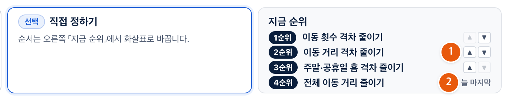
그림 5-2 「직접 정하기」를 고른 상태의 「지금 순위」 — ▲▼ 화살표와 「늘 마지막」 · 운영 방침·실행
설정 상자
우선순위
무엇을 정하나
세 격차의 순서. 전체 이동 거리는 늘 마지막
기본값
이동 횟수 → 이동 거리 → 주말·공휴일 → 전체 이동 거리
바꾸면
1순위 격차가 가장 먼저 허용 안으로 들어가고, 뒤 순위는 내줍니다. 비교 화면의 순위도 이 순서로 매깁니다
언제 바꾸나
이동 부담보다 주말 흥행의 공평이 중요할 때 → 주말·공휴일 격차 줄이기 우선. 거리를 횟수보다 먼저 보려 할 때 → 직접 정하기
결과에서 확인
방침과 견주기의 순서, 목표별 격차 칸의 「n순위」
5.3 허용 수준
목표마다 「이만큼 격차는 괜찮다」는 선을 정합니다. 격차가 허용 수준 이하이면 「안」, 크면 「넘음」입니다. 좁힐수록 그 격차는 줄고, 다른 쪽 격차는 커질 수 있습니다.
줄마다 「가장 많은 구단이 가장 적은 구단보다 [−] n [+] 회 넘게 많지 않으면 만족」이라고 적혀 있습니다.
−·+로 값을 옮기거나 숫자를 직접 적습니다.
한 번에 이동 횟수 1회, 이동 거리 50km, 주말·공휴일 1점씩 움직입니다.
두 끝에서는 안내가 나옵니다.
0: 「이 목표를 반드시 맞추려 하고 다른 목표를 내줍니다」. 주말·공휴일은 「이 목표를 될 수 있는 한 맞추고 다른 목표를 내줍니다(0은 될 수 없어 1점까지)」.
기본값의 세 배 이상: 「이 목표는 사실상 보지 않습니다」.
그림 5-3 「목표마다 허용 수준」 세 줄 — −·+ 단추와 숫자, 주말·공휴일 줄 밑 안내 · 운영 방침·실행
설정 상자
허용 수준
무엇을 정하나
세 격차마다 「여기까지면 같다고 본다」는 값
기본값
이동 횟수 4회 · 이동 거리 600km · 주말·공휴일 3점
바꾸면
좁히면 그 격차를 줄이느라 다음 순위 격차를 내줍니다. 너무 좁으면 끝까지 못 들어와 「넘음」인 채로 끝날 수 있습니다. 넓히면 그 목표는 쉽게 만족되어 다음 순위에 힘을 씁니다. 대신 그 격차는 허용 수준 근처까지 벌어질 수 있습니다
언제 바꾸나
기본값으로 실행한 결과의 방침과 견주기에서 「넘음」을 본 뒤. 조금씩
결과에서 확인
방침과 견주기의 「허용 안」·「n 넘음」, 목표별 격차의 초록 띠, 실행 결과 비교의 「같다고 봄」
허용 수준과 우선순위는 이렇게 맞물립니다. 운영 방침 설명하기 창의 말입니다(괄호 안에는 지금 방침의 목표 이름이 들어갑니다). 「1순위(…)가 허용 수준 안에 들어오면 만족으로 보고, 그때부터 2순위(…)로 결과를 가립니다. 1순위를 넘은 두 결과는 2순위가 아무리 좋아도 1순위를 덜 넘은 쪽을 고릅니다.」
움직이는 요령
처음에는 기본값으로 실행합니다.
결과에서 「넘음」인 목표를 봅니다. 1순위가 「넘음」이면 허용을 조금 넓히거나 지정을 줄입니다. 2·3순위가 「넘음」이면 받아들일지, 순서를 바꿀지 정합니다.
한 번에 하나씩 바꾸고 다시 실행합니다. 결과가 실행 결과 비교에 쌓이므로 되돌아갈 수 있습니다.
5.4 실행 시간
최대 1~5분 가운데 고릅니다. 더 나아지지 않으면 최대 시간 전에 먼저 끝납니다.
아래 줄의 「최대 [−] n [+] 분」에서 −·+를 누르거나 숫자를 적습니다.
설정 상자
실행 시간
무엇을 정하나
자동 편성이 더 나은 일정을 찾는 최대 시간
기본값
2분
바꾸면
길게 두면 더 찾아볼 시간이 생깁니다. 다만 절반 동안 나아지지 않으면 그때 끝나므로, 길게 둔다고 늘 그만큼 걸리지는 않습니다
언제 바꾸나
보통은 기본값 그대로. 더 오래 찾아보게 하려면 늘립니다
결과에서 확인
끝났을 때 알림 「정한 만큼 찾아봄」·「더 나아지지 않아 먼저 끝남」·「고른 최대 시간까지 실행」, 현재 결과 분석 둘째 줄의 「실행 n분」
5.5 실행하기
아래 줄의 「이 방침으로 실행」을 누릅니다. 처음부터 짤지 전 결과에서 이어서 풀지는 자동으로 정해집니다.
아래 줄의 「지금 방침: … · 이동 횟수 n회 · 이동 거리 n km · 주말·공휴일 n점」을 읽고 맞는지 봅니다.
편성 조건을 고친 뒤면 「· 지금 결과에서 이어서」, 홈 지정을 바꾼 뒤면 「· 홈 지정이 바뀌어 처음부터 다시」가 뒤에 붙습니다. 운영 방침만 바꿨거나 결과가 없으면 아무 표시 없이 처음부터 짭니다.
이 방침으로 실행을 누릅니다.
화면이 실행 중 화면으로 바뀝니다.
단추가 눌리지 않으면 사전 점검에 진행 불가 항목이 있는 것입니다. 허용 수준 구역 아래에 「사전 점검에 진행 불가 n건이 있어 실행할 수 없습니다 — (항목 이름). 편성 조건 입력·검증으로 돌아가 고치세요.」라고 적힙니다. 10장 「문제 해결」을 보세요.
5.6 실행 중 화면
머리글에 「찾는 중…」이 보이고, 그 아래는 현재 결과 분석과 같은 구성입니다. 더 나은 결과가 나올 때마다 숫자가 바뀝니다.
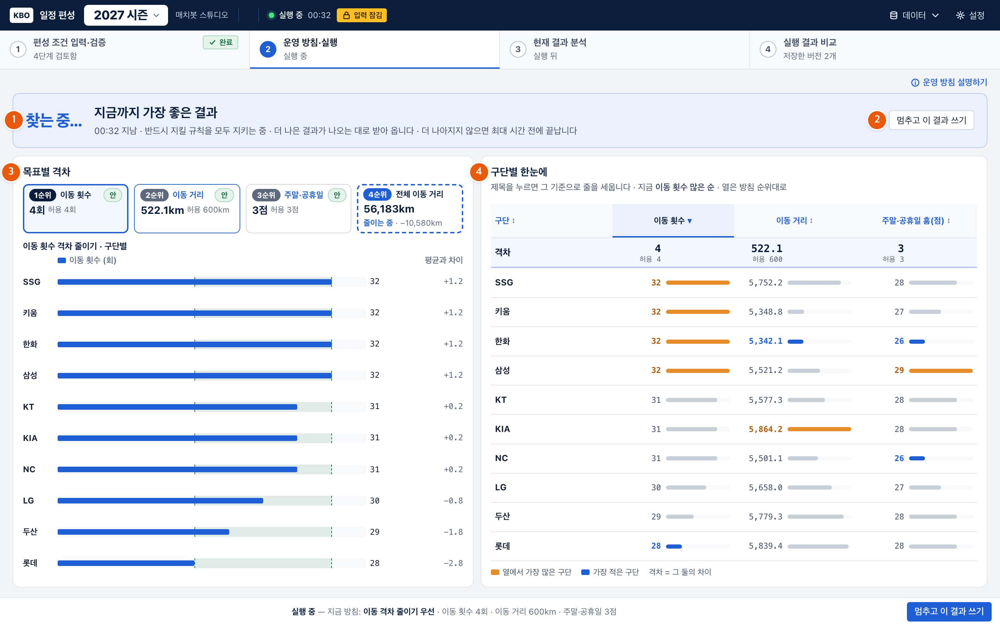
그림 5-4 실행 중 화면 — 「찾는 중…」 머리글, 「멈추고 이 결과 쓰기」, 아래 목표별 격차와 구단별 한눈에 · 운영 방침·실행
자리
무엇
머리글
「찾는 중…」, 「지금까지 가장 좋은 결과」, 「n 지남 · 반드시 지킬 규칙을 모두 지키는 중(또는 규칙을 맞춰 가는 중) · 더 나은 결과가 나오는 대로 받아 옵니다 · 더 나아지지 않으면 최대 시간 전에 끝납니다」
머리글 오른쪽
멈추고 이 결과 쓰기
왼쪽
목표별 격차 — 칸마다 지금 값과 「안」·「넘음」. 4순위 칸에 「줄이는 중 · −n km」 또는 「1~3순위 다음 차례」
오른쪽
구단별 한눈에
아래 줄
「실행 중 — 지금 방침: …」, 멈추고 이 결과 쓰기
자동 편성은 단계를 밟습니다. 먼저 반드시 지킬 규칙을 맞추고, 다음에 1·2·3순위를 허용 안으로 넣고, 모두 들어오면 4순위 전체 이동 거리를 줄입니다. 4순위 칸의 「줄이는 중」이 보이면 앞 순위가 모두 들어왔다는 뜻입니다.
기다립니다. 단계 띠나 데이터 메뉴로 다른 화면에 가도 실행은 계속됩니다. 단계 띠의 둘째 칸에는 「실행 중」이 보입니다.
처음 화면에는 「계획을 실행하는 중입니다. 끝나면 결과 화면으로 넘어갑니다.」와 실행 화면으로 ›가 보입니다.
브라우저의 뒤로를 누르면 「계획을 실행하는 중입니다」 창이 「실행을 멈추고 이동하거나, 계속 실행하며 이 화면에 머뭅니다.」라고 묻습니다. 계속 실행 또는 실행 멈추고 이동을 누릅니다.
도중에 끝내려면 멈추고 이 결과 쓰기를 누릅니다.
그때까지 찾은 가장 좋은 일정으로 끝납니다.
끝나면 알림이 뜨고 현재 결과 분석으로 넘어갑니다.
알림
뜻
「실행이 끝났습니다(정한 만큼 찾아봄). 「…」(으)로 저장했습니다.」
정해 둔 만큼 찾아보고 끝남. 보통 1분 35초 안팎
「실행이 끝났습니다(고른 최대 시간까지 실행). 「…」(으)로 저장했습니다.」
최대 시간까지 찾았음
「실행이 끝났습니다(더 나아지지 않아 먼저 끝남). …」
절반 동안 나아지지 않아 먼저 끝남
「실행이 끝났습니다(직접 멈춤). …」
멈추고 이 결과 쓰기를 누름
「같은 조건으로 전에 실행한 결과를 바로 가져왔습니다. …」
편성 조건·방침·실행 시간이 전과 같아 새로 짜지 않음
「실행이 끝났지만 반드시 지킬 규칙을 지키지 못해 저장하지 않았습니다.」
결과는 보이지만 저장되지 않음. 편성 조건을 확인
5.7 저장되는 이름
실행이 끝나면 결과가 저절로 저장됩니다. 이름은 「#번호_방침_허용 수준」입니다.
번호는 실행마다 1씩 늘어납니다(네 자리).
방침은 「이동격차」, 「주말공휴일」, 「직접정하기」 가운데 하나입니다.
허용 수준은 바꾼 것만이 아니라 셋 다 적힙니다. 예: 「#0003_주말공휴일_4회_600km_1점」.
이름은 현재 결과 분석 둘째 줄의 「저장한 이름」 칸이나 실행 결과 비교의 이름 바꾸기로 바꿀 수 있습니다. 이름을 바꾼 결과는 지우지 않고 남깁니다. 7장.
5.8 결과 고치기 뒤의 실행
일정 자세히 보기에서 연전을 고정하거나 경기를 손으로 놓은 뒤(6.5)에는, 아래 줄에 「고정한 연전 n개를 지킵니다」(손으로 놓은 경기가 있으면 「고정한 연전 n개 · 손으로 놓은 경기 m개를 지킵니다」)가 보입니다. 이 화면에서 이 방침으로 실행을 눌러도 그것은 지킵니다.
홈 지정이 바뀌면 처음부터 다시 짭니다(고정한 것은 그대로).
고정한 연전이 너무 많아 처음부터 짤 수 없으면 지금 일정에서 이어서 풉니다. 「처음부터 다시 짤 수 없어 지금 일정에서 이어서 고칩니다.」라고 알려 줍니다.
고정을 풀려면 일정 자세히 보기의 시즌 띠에서 풉니다.
6. 현재 결과 분석
이 장에서 할 수 있는 일방금 나온 결과를 정해진 순서로 읽고, 「이 결과를 왜 골랐는지」를 한 줄로 말할 수 있게 됩니다. 몇 연전만 손보고 싶을 때 결과를 고치는 법도 익힙니다.
읽는 순서는 넷입니다. ① 요구 사항 점검 → ② 방침과 견주기 → ③ 구단별 보기 → ④ 일정 자세히 보기. 반드시 지킬 규칙이 지켜졌는지가 먼저이고, 목표별 격차가 그다음, 한 구단에 몰린 부담이 그다음, 달력은 마지막입니다.
실행이 끝나면 저절로 현재 결과 분석 화면이 열립니다. 단계 띠의 셋째 칸입니다. 화면 둘째 줄의 단추 요구 사항 점검 · 일정 자세히 보기 · 구단별 보기로 세부 화면에 들어가고, 세부 화면 아래 줄의 현재 결과 분석으로 돌아옵니다.
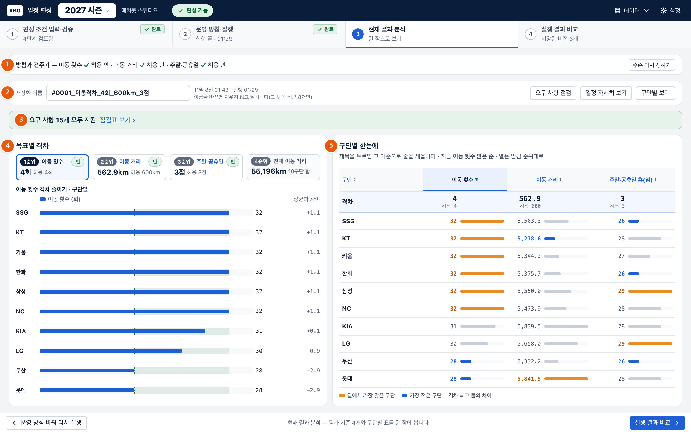
그림 6-1 현재 결과 분석 전체 — 위부터 「방침과 견주기」 줄, 저장 이름 줄과 단추 셋, 요구 사항 점검 요약, 왼쪽 「목표별 격차」, 오른쪽 「구단별 한눈에」 · 현재 결과 분석
6.1 요구 사항 점검: 규칙을 다 지켰나
셋째 줄의 요약을 먼저 읽습니다. 「요구 사항 n개 모두 지킴」이면 다음으로 넘어가고, 「어김」이 있으면 여기서 멈춥니다.
이 판정은 자동 편성의 점수와 따로 셉니다. 완성된 일정을 날짜별 경기로 풀어 요구 사항마다 다시 센 것이라, 근거를 펼쳐 직접 세어 볼 수 있습니다.
요약 줄을 읽습니다.
「요구 사항 n개 모두 지킴」 또는 「요구 사항 n개 어김 — (어긴 항목 이름)」입니다.
더 보려면 점검표 보기 › 또는 둘째 줄의 요구 사항 점검을 누릅니다.
요구 사항 점검 화면이 열립니다. 맨 위에 같은 요약과 지금 일정 다시 점검 · 엑셀로 받기, 그 밑에 시즌 합계, 그 밑에 연전 기간 따라 점검 표입니다.
시즌 합계에서 경기일 수, 연전 기간 수, 구단별 홈 경기 수 같은 시즌 전체 숫자를 봅니다.
어긴 줄이 있으면 「n줄 어김」과 기간 n으로 ›가 붙어 그 기간으로 내려갑니다.
연전 기간 따라 점검 표를 봅니다. 한 줄이 한 기간이고, 칸은 구장마다 고정입니다.
늘 보는 셋(구장마다 경기 하나 · 모든 구단 한 번씩 · 연전 길이)은 「✔ 지킴」에 접혀 있고, 특별 요구(「✔ 개막전 정한 홈」 · 「✔ 어린이날 홈 구장」 · 「✔ 4연전 개막 대진」처럼)와 어긴 것만 「특별 요구 · 어긴 것」 칸에 나옵니다.
줄을 누르면 그 기간의 날짜별 경기와 근거가 펼쳐집니다. 모두 펼치기로 한꺼번에 펼칩니다.
어긴 기간만에 표시하면 어긴 줄만 남습니다. 어긴 기간이 있으면 다음 어긴 기간 ›이 나타나 차례로 갑니다.
표 위의 띠는 「기간 n까지 누적」입니다. 10구단의 홈·원정 경기 수와 지금 몇 연속인지가 보이고, 표를 내려가면 바뀝니다. 구단을 누르면 그 구단 경기만 진하게 보입니다.
날짜를 누르면 일정 자세히 보기의 달력이 그 날로 갑니다.
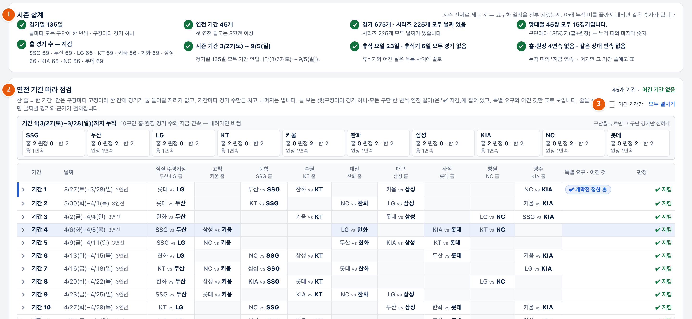
그림 6-2 「시즌 합계」와 「연전 기간 따라 점검」 표, 「어긴 기간만」 표시 · 요구 사항 점검
지금 일정 다시 점검을 누르면 지금 보이는 일정으로 서버에 다시 묻습니다. 결과를 고친 뒤(6.5)에는 「이 점검표는 지금 보이는 일정의 것이 아닙니다」라고 알려 주므로, 그때 누릅니다. 엑셀로 받기는 7장에서 설명합니다.
6.2 방침과 견주기: 목표마다 「안」·「넘음」
맨 위 줄에서 목표마다 허용 수준 안인지 봅니다. 1순위부터 차례로 읽습니다.
맨 위 방침과 견주기 줄을 읽습니다.
목표마다 「이동 횟수 ✓ 허용 안」처럼 「허용 안」 또는 「n회 넘음」이 적혀 있습니다. 「넘음」 옆의 수가 허용 수준을 얼마나 넘었는지입니다.
「넘음」이 있으면 그 목표가 몇 순위인지 봅니다.
1순위가 「넘음」이면 자동 편성이 끝까지 허용 수준 안으로 넣지 못한 것입니다. 허용 수준이 너무 좁거나 지정한 것이 너무 많을 때 그렇습니다.
2·3순위가 「넘음」이면 앞 순위를 지키느라 내준 것입니다. 받아들일 수 있는 정도인지 봅니다.
허용 수준을 다시 정하려면 그 줄의 수준 다시 정하기를 누릅니다.
운영 방침·실행 화면의 목표마다 허용 수준 구역으로 바로 갑니다.
왼쪽 목표별 격차에서 목표 칸을 누릅니다.
칸마다 순위, 격차, 「허용 n」, 「안」·「넘음」 표시가 있습니다. 4순위 전체 이동 거리는 허용 수준이 없어 10구단 합만 보입니다.
누른 목표의 구단별 막대가 아래에 펼쳐집니다. 초록 띠가 「가장 적은 구단 + 허용 수준」이므로, 띠를 벗어난 막대가 허용을 넘긴 구단입니다.
그림 6-3 「목표별 격차」 네 칸과 누른 목표의 구단별 막대, 초록 띠 · 현재 결과 분석
보이는 것
뜻
다음에 할 일
세 목표 모두 「안」
방침이 요구한 수준을 다 맞춤
4순위 전체 이동 거리와 구단별 보기를 봄
1순위만 「넘음」
허용 수준이 좁거나 지정이 많음
허용을 조금 넓히거나 지정을 줄여 다시 실행
2·3순위 「넘음」
1순위를 지키느라 내줌
받아들일 정도면 그대로, 아니면 순서를 바꿔 다시 실행
6.3 구단별 보기: 한 구단에 몰린 부담
격차가 「안」이어도 특정 구단에 부담이 몰릴 수 있습니다. 오른쪽 구단별 한눈에 표로 먼저 훑고, 눈에 띄는 구단은 구단별 보기에서 따로 봅니다.
구단별 한눈에 표의 열 제목을 눌러 그 기준으로 줄을 세웁니다.
열은 방침 순위대로 이동 횟수 · 이동 거리 · 주말·공휴일 홈(점) 셋입니다. 표 위에 「제목을 누르면 그 기준으로 줄을 세웁니다 · 지금 … 많은 순 · 열은 방침 순위대로」가 적혀 있습니다.
열마다 가장 많은 구단과 가장 적은 구단이 색으로 표시되고, 맨 위 「격차」 줄이 그 둘의 차이입니다(표 아래 「열에서 가장 많은 구단 · 가장 적은 구단 · 격차 = 그 둘의 차이」).
여러 열에서 같은 구단이 가장 많은 쪽에 있으면 그 구단을 기억해 둡니다.
둘째 줄의 구단별 보기를 누르고, 왼쪽 목록에서 그 구단을 고릅니다.
가운데에 구단별 일정표(연전마다 기간 · 연전 수 · 홈/원정 · 상대 · 구장 · 이동 거리. 인쇄로 구단에 나눠 줄 수 있음)가, 오른쪽 구단 카드에 그 구단의 숫자가 나옵니다. 이동 · 휴일(총 이동거리 · 이동 횟수 · 주말·공휴일 홈), 홈 · 원정(주말 홈/원정 · 주중 이동 · 최장 연속 · 공휴일 홈 · 7~8월 원정), 홈/원정 흐름 띠, 장거리 연속 원정, 그리고 달력에서 이 구단만 보기입니다.
두 구단을 견주려면 구단 카드의 다른 구단과 비교를 누르고, 「비교할 구단을 고르세요」가 뜬 왼쪽 목록에서 둘째 구단을 고릅니다.
두 구단 비교가 열립니다. 위아래 두 줄의 이동 구간 띠(막대 하나가 이동 한 번, 높이가 그 구간 거리), 누적 이동거리, 항목별 비교 표입니다. 「진한 값 = 둘 중 작은 쪽(이동·원정 부담이 덜함)」입니다.
자리 바꾸기로 위아래를 바꾸고, 비교 끝내기로 한 구단 보기로 돌아갑니다.
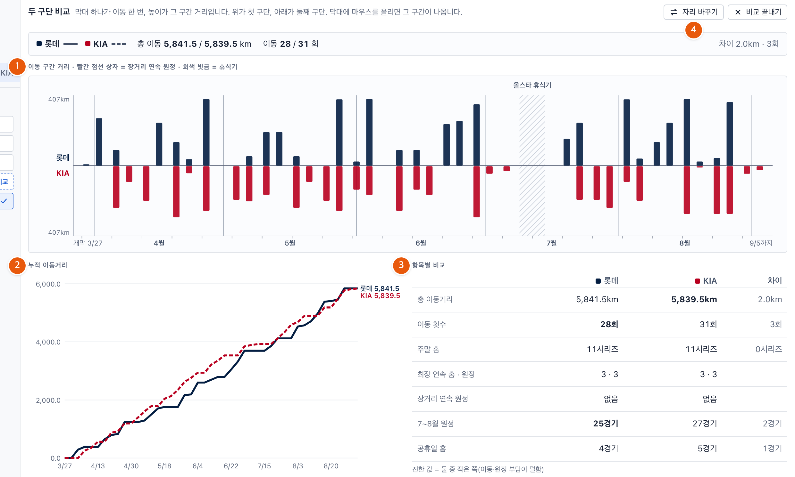
그림 6-4 「두 구단 비교」 — 두 줄의 이동 구간 띠와 항목별 표 · 구단별 보기
6.4 일정 자세히 보기: 달력과 연전
달력에서 실제 대진을 확인합니다. 지정한 날(개막전, 어린이날, 홈 구장을 지정한 날)이 그대로 들어갔는지 여기서 봅니다.
둘째 줄의 일정 자세히 보기를 누릅니다.
맨 위에 연전 기간 고정 띠(6.5), 그 밑에 탭 달력 · 홈/원정 흐름 · 상대별 경기 수가 있습니다.
달력 탭에서 달을 옮겨 가며 봅니다.
연전 기간마다 대진이 칩으로 놓여 있습니다. 대진까지 정한 경기(개막 2연전)에는 핀 표시가 붙습니다. 고정한 연전 기간에는 기간 이름 옆에 「고정」이, 손으로 놓은 경기에는 「손」이 붙습니다(6.5).
칩을 누르면 그 경기의 정보 창(기간 · 구장 · 홈/원정 · 위반)이 열립니다.
홈/원정 흐름 탭을 봅니다.
구단마다 한 줄 띠입니다. 홈 연전은 낮고 옅은 막대, 원정 연전은 높고 진한 막대이고, 선은 연전마다 옮긴 거리입니다. 오른쪽 끝에 「최장 연속」(예: 홈 3 · 원정 3)이 있고, 띠 아래에 「4연속을 넘는 구단 없음」처럼 판정이 적힙니다. 구단 이름을 누르면 그 구단만 진하게 보입니다.
상대별 경기 수 탭을 봅니다.
맨 위 한 줄이 판정입니다. 「모든 맞대결이 15경기(홈 9 · 원정 6)로 고릅니다」이면 됩니다. 그 아래 표는 「가로줄이 홈 구단, 세로줄이 원정 구단. 칸은 그 홈에서 치르는 경기 수입니다.」
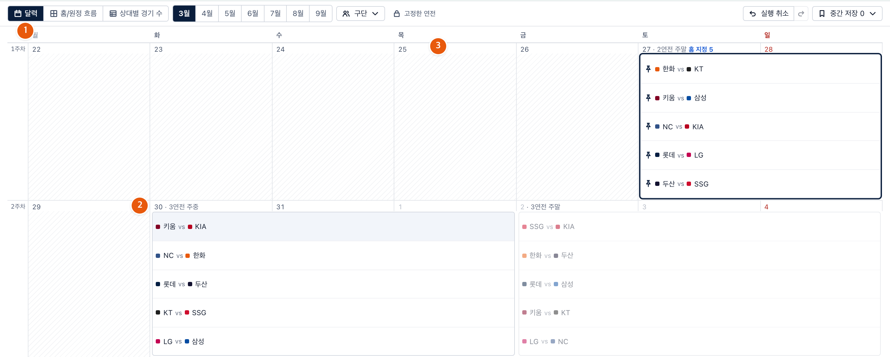
그림 6-5 「달력」 탭 — 연전 기간마다 놓인 대진 칩과 핀 표시 · 일정 자세히 보기
확인할 것은 세 가지입니다.
개막 2연전과 어린이날의 홈 구단이 편성 조건에서 정한 대로인가.
홈 구장을 지정한 날에 그 구단이 홈인가.
올스타 휴식기 뒤 첫 4연전이 들어 있는가.
6.5 결과 고치기: 몇 연전만 바꾸고 싶을 때
결과 대부분은 좋은데 몇 연전만 바꾸고 싶으면, 그 연전을 고정하거나 홈 구단을 지정한 뒤 나머지를 자동 편성에 맡깁니다. 처음부터 다시 실행하는 것이 아니라, 잡아 둔 것은 두고 나머지만 새로 짭니다.
일정 자세히 보기 맨 위의 연전 기간 고정 띠가 이 일을 맡습니다. 띠에는 연전 기간이 칸으로, 위에 달 이름이 있습니다. 오른쪽 위 「누르면」 뒤의 고정 / 홈 지정 가운데 하나가 켜져 있고, 그에 따라 칸을 눌렀을 때 하는 일이 달라집니다. 그 옆에 모두 풀기가 있고, 띠 아래에 검사하고 저장과 나머지 자동 편성이 있습니다.
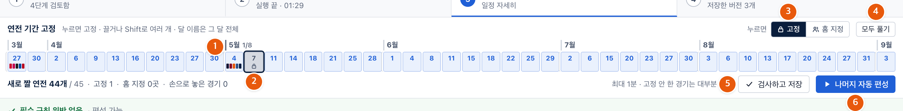
그림 6-6 「연전 기간 고정」 띠 — 달 이름, 고정한 칸, 「고정」/「홈 지정」 전환, 「모두 풀기」, 띠 아래의 「검사하고 저장」·「나머지 자동 편성」 · 일정 자세히 보기
연전 고정하기
고정이 켜진 상태에서 띠의 칸을 누릅니다.
그 연전 기간의 모든 대진이 고정되고, 칸에 자물쇠 표시가, 달 이름 밑에 「고정한 수/그 달 연전 수」(예: 2/9)가 붙습니다. 아래 달력의 그 기간에도 「고정」이 붙습니다. 다시 누르면 풀립니다.
띠 위의 안내대로 「누르면 고정 · 끌거나 Shift로 여러 개 · 달 이름은 그 달 전체」입니다.
띠 아래에서 「새로 짤 연전 n개 / 45 · 고정 n · 홈 지정 n곳 · 손으로 놓은 경기 n」을 봅니다.
아무것도 고정하지 않았으면 「고정한 것이 없어 모든 연전을 새로 짭니다」입니다.
고정이 많아지면 「새로 짤 연전이 n개뿐 · 위반은 없어도 주말·공휴일 격차가 커질 수 있습니다」 또는 「새로 짤 연전이 n개뿐이라 짜지 못할 수 있습니다 · 고정을 줄여 보세요」라고 알려 줍니다.
모두 풀려면 모두 풀기를 누릅니다.
「고정한 연전과 손으로 놓은 경기의 고정을 모두 풀까요? 홈 지정은 그대로 둡니다. 실행 취소로 되돌릴 수 있습니다.」라고 묻습니다.
홈 구단 지정하기
홈 지정으로 바꾸고, 띠에서 3연전 칸을 누릅니다.
띠 위 안내가 「3연전을 누르고 홈 경기를 할 구단을 고릅니다 · 한 연전에 5구단까지」로 바뀝니다. 홈 지정은 3연전에만 합니다.
「(기간) 3연전 · 홈 지정 n / 5」 창이 열리고 「고른 구단은 이 연전에 반드시 홈 경기를 합니다 · 두산·LG는 한 구단만」이 적혀 있습니다. 지금 일정에서 그 연전에 홈인 구단에는 「지금 홈」이 붙어 있습니다.
구단을 누릅니다.
지금 일정에서 이미 홈이면 「(구단)은(는) 이미 홈입니다. 홈 지정으로 남겨 두어 다시 짤 때도 홈으로 지킵니다.」, 원정이면 「(구단) 홈 지정 · 지금 일정에서는 원정이라 위반으로 보입니다. 「나머지 자동 편성」이 반영합니다.」라고 알려 줍니다.
같은 구장을 쓰는 두 구단은 한 연전에 하나만 홈이 됩니다.
경기를 손으로 놓기
아래 달력에서 경기 칩을 누르고, 열린 경기 창의 옮기기…를 누릅니다.
창에 「놓은 경기만 그 자리에 고정됩니다. 생긴 위반은 자동 편성이 고칩니다」가 적혀 있습니다.
달력 위에 「옮기는 중」 줄이 나타납니다. 「놓을 수 있는 연전 기간에 「여기로」가 켜집니다. 그 기간의 경기를 누르면 둘을 맞바꿉니다. 월을 넘겨도 유지됩니다 · Esc 취소」. 그만두려면 취소 또는 Esc를 누릅니다.
놓을 연전 기간의 여기로를 누릅니다. 그 기간의 다른 경기를 누르면 두 경기를 맞바꿉니다.
단추에는 「여기로 · 위반 n↑」처럼 옮겼을 때 위반이 늘거나(↑) 주는지(↓) 적혀 있습니다.
놓은 경기에 「손」 표시가 붙고 그 자리에 고정됩니다. 고정한 연전으로 넣거나 빼는 것은 막습니다.
「손으로 놓았습니다 · 이 경기는 그 자리에 고정 · 위반 n↑ — 남은 위반은 「나머지 자동 편성」이 고칩니다」라고 알려 줍니다. 위반이 생기면 띠 아래에 「n건 필수 규칙 위반」이 보이고, ‹ ›로 위반을 하나씩 보면 달력이 그 자리로 갑니다.
고정만 풀려면 그 칩을 누르고 고정 풀기를 누릅니다. 경기는 놓은 자리에 남고 「손」 표시만 없어집니다. 원래 자리로 되돌리려면 달력 위 실행 취소를 누릅니다.
마치기: 검사하고 저장 · 나머지 자동 편성
고친 뒤에는 두 길 가운데 하나로 마칩니다.
단추
하는 일
언제
검사하고 저장
자동 편성 없이 반드시 지킬 규칙을 모두 검사하고, 지켰으면 버전으로 저장
손으로 놓은 것만으로 일정이 완성됐을 때
나머지 자동 편성
고정한 연전·손으로 놓은 경기·홈 지정은 두고 나머지 연전을 자동 편성이 새로 짬(최대 1분)
잡아 둔 것 말고는 자동 편성에 맡길 때
나머지 자동 편성을 누릅니다.
「연전 n개를 새로 짭니다(최대 1분). 고정하지 않은 경기는 대부분 바뀝니다.」라고 알려 주고 실행 중 화면(5.6)으로 바뀝니다.
고정한 것끼리 규칙이 어긋나 있으면 「고정한 것끼리 위반이 있어 실행하지 않았습니다. 고정을 풀거나 직접 고치세요.」로 멈춥니다.
끝나면 일정 자세히 보기로 돌아옵니다. 띠 아래 새로 짠 결과 · 전 → 후 칸에서 목표 넷의 전후를 봅니다.
칸에 「고정한 것만 두고 처음부터 다시 짰습니다 · 연전 n개 새로 짬 · 전 = 「…」」와 목표 넷의 「전 → 후」가 보입니다.
결과는 이름 끝에 「_고정후새로짜기」가 붙어 저장되고(「「…_고정후새로짜기」(으)로 저장 · 실행 결과 비교에서 견줍니다」), 실행 결과 비교에 쌓입니다.
검사하고 저장을 누른 경우, 지켰으면 이름 끝에 「_직접고침」이 붙어 저장됩니다. 위반이 있으면 「필수 규칙 위반 n건이 있어 저장하지 않았습니다.」로 막히고, 띠 아래에 「필수 규칙 위반 n건이라 저장할 수 없습니다 · 고친 뒤 다시 누르거나 「나머지 자동 편성」으로 고칩니다」와 위반 목록이 열립니다. 그 자리로 ›로 가서 고칩니다.
6.6 다음으로
읽기가 끝나면 아래 줄에서 둘 중 하나로 갑니다.
운영 방침 바꿔 다시 실행 — 「넘음」이 마음에 들지 않거나 다른 방침도 보고 싶을 때. 5장.
실행 결과 비교 — 쌓인 결과를 나란히 놓고 고를 때. 7장.
7. 실행 결과 비교와 확정
이 장에서 할 수 있는 일쌓인 결과를 순위대로 놓고, 둘을 골라 어디서 갈리는지 읽고, 하나를 시즌 일정으로 확정합니다. 결과를 남기고 밖으로 내보내는 법도 익힙니다.
실행 결과 비교는 「왜 이쪽이 위인가」를 한 줄로 답하는 화면입니다. 위의 저장한 버전 표가 순위를, 아래의 고른 두 버전 표가 그 이유(「여기서 갈림」)를 보여 줍니다.
단계 띠의 넷째 칸 실행 결과 비교를 누르거나, 현재 결과 분석 아래 줄의 실행 결과 비교를 누릅니다.
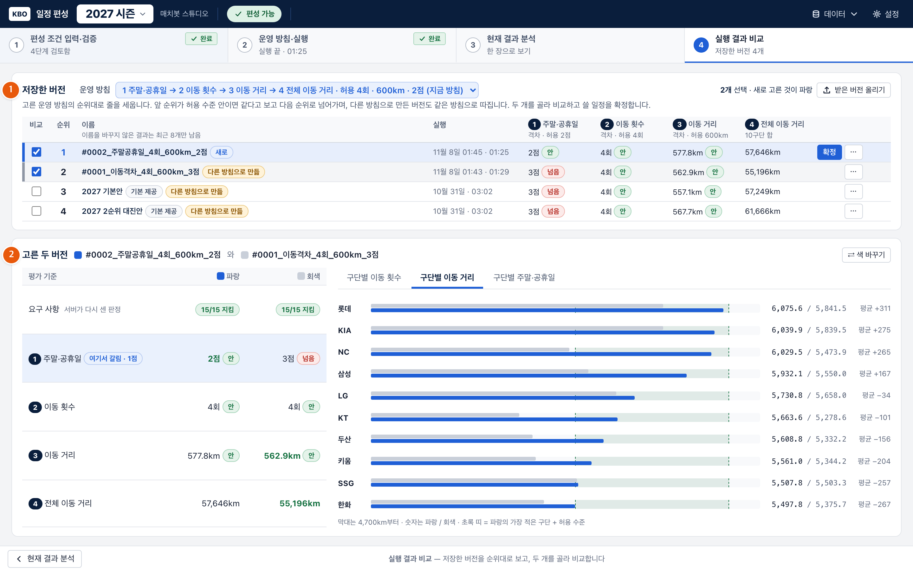
그림 7-1 실행 결과 비교 전체 — 위 「저장한 버전」 표, 아래 「고른 두 버전」 · 실행 결과 비교
7.1 저장한 버전: 순위표
모든 버전을 고른 운영 방침의 순위대로 줄 세웁니다. 앞 순위가 허용 수준 안이면 같다고 보고 다음 순위로 넘어갑니다.
표에는 실행할 때마다 저절로 저장된 결과와, 「기본 제공」 표시가 붙은 버전 두 개(「2027 기본안」·「2027 2순위 대진안」)가 늘 함께 있습니다. 반드시 지킬 규칙을 어긴 결과는 저장되지 않으므로 여기에 없습니다.
열
뜻
비교
아래 고른 두 버전에 넣을 표시. 두 개까지
순위
고른 운영 방침으로 매긴 순위. 1위는 진하게
이름
저장 이름과 표시(「확정」·「새로」·「남김」·「기본 제공」·「다른 방침으로 만듦」·「시험용 자동 편성」). 열 제목 밑에 「이름을 바꾸지 않은 결과는 최근 8개만 남음」
「1 이동 횟수 → 2 이동 거리 → 3 주말·공휴일 → 4 전체 이동 거리 · 허용 4회 · 600km · 3점」처럼 순서와 허용 수준이 적혀 있습니다. 처음에는 「(지금 방침)」이 붙은 지금 방침입니다. 저장한 버전에 쓰인 다른 방침이 있으면 그것도 고를 수 있습니다.
그 옆에 「n개 선택 · 새로 고른 것이 파랑」과 받은 버전 올리기가 있습니다.
다른 방침으로 만든 버전에는 「다른 방침으로 만듦」이 붙지만, 줄 세우기는 고른 방침 하나로 합니다.
1위와 2위의 차이를 봅니다.
전체 이동 거리에서 갈리고 차이가 작으면 표 아래에 「차이 작음」 표시와 「1위와 2위는 전체 이동 거리 n km 차이입니다. 같은 조건으로 다시 실행해도 이만큼은 달라질 수 있습니다.」가 보입니다. 그 차이로 고르지 않습니다.
운영 방침 칸을 바꿔 가며 순위가 어떻게 움직이는지 봅니다.
같은 버전들인데 방침에 따라 1위가 바뀌면, 그 버전들은 「어느 쪽을 먼저 챙기느냐」에 따라 갈리는 것입니다.
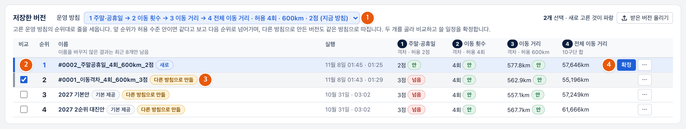
그림 7-2 「저장한 버전」 표 — 「운영 방침」 칸, 순위, 표시들, 「확정」 단추 · 실행 결과 비교
7.2 고른 두 버전: 여기서 갈림
두 버전을 평가 기준마다 나란히 놓고, 처음으로 승부가 난 줄을 봅니다. 그 줄이 「왜 이쪽이 위인가」의 답입니다.
저장한 버전 표의 비교 칸에서 두 버전에 표시합니다.
새로 고른 것이 파랑, 다른 하나가 회색입니다. 실행 직후에는 방금 실행한 것과 1위가 미리 골라져 있습니다.
고른 두 버전 표의 첫 줄 요구 사항을 봅니다.
표 제목에 「(파랑 버전) 와 (회색 버전)」이 적히고, 열은 「평가 기준 · 파랑 · 회색」입니다.
요구 사항 줄은 「서버가 다시 센 판정」입니다. 「n/n 지킴」이어야 합니다. 「다른 일정의 점검표」가 보이면 그 버전을 불러와 요구 사항 점검에서 지금 일정 다시 점검을 누릅니다.
평가 기준 줄을 1순위부터 읽습니다.
둘 다 허용 안이면 「같다고 봄」이 붙고 다음 줄로 넘어갑니다.
처음으로 갈린 줄에 「여기서 갈림 · 차이」가 붙습니다. 그 줄에서 값이 작은 쪽이 진하게 표시되고, 그쪽이 위입니다.
그 아래 줄은 순위에 영향을 주지 않습니다. 모든 줄이 같으면 「모든 평가 기준이 같습니다.」라고 적힙니다.
구단별 이동 횟수 · 구단별 이동 거리 · 구단별 주말·공휴일 탭을 눌러 두 버전의 구단별 막대를 견줍니다.
파랑과 회색 막대가 구단마다 나란히 놓이고, 숫자는 「파랑 / 회색」입니다. 「초록 띠 = 파랑의 가장 적은 구단 + 허용 수준」입니다.
⇄ 색 바꾸기로 파랑과 회색을 바꿔 볼 수 있습니다.
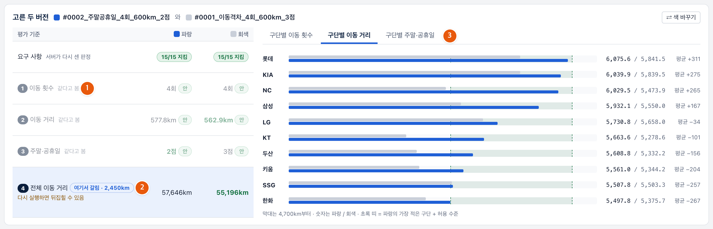
그림 7-3 비교 기준 방침을 첫 실행 방침으로 바꾼 뒤의 「고른 두 버전」 표 — 「같다고 봄」 줄과 「여기서 갈림 · 차이」 줄, 오른쪽 구단별 막대 · 실행 결과 비교
읽고 나면 이렇게 한 줄로 말할 수 있어야 합니다.
「n순위까지는 둘 다 허용 안이라 같다고 보았고, ○○에서 이쪽이 △만큼 앞서 이 버전을 골랐다.」
7.3 확정하기
고른 버전의 줄에서 「확정」을 누릅니다. 확정은 해마다 하나이고, 확정한 버전이 처음 화면의 결과 확인에 나옵니다.
저장한 버전 표에서 고른 버전의 줄 오른쪽 확정을 누릅니다.
1위 줄의 확정은 파란 단추입니다. 다른 줄에서 골라도 됩니다.
「「…」을(를) 2027 일정으로 확정할까요? 처음 화면의 결과 확인에 나옵니다.」라고 묻습니다. 이미 확정한 버전이 있으면 「지금 확정한 「…」 대신 …」으로 묻습니다.
확인하면 「「…」을(를) 확정했습니다.」 알림이 뜨고, 그 줄에 「확정」 표시가 붙습니다.
같은 자리의 단추가 확정 취소로 바뀝니다.
처음 화면의 결과 확인 카드에서 보기를 누르면 확정 일정 화면이 열립니다.
확정한 버전의 이름과 「확정」 표시, 내려받기, 목표별 격차, 구단별 한눈에가 보입니다. 내려받기로 버전 파일을 받을 수 있습니다.
아래 줄에 처음 화면, 「2027 확정 일정 — 다른 버전으로 바꾸거나 확정을 취소하려면 실행 결과 비교로 갑니다」, 실행 결과 비교가 있습니다.
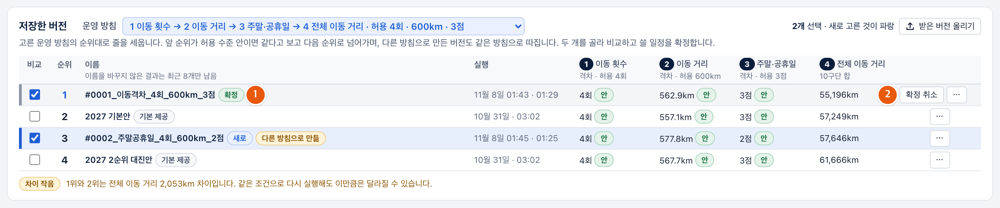
그림 7-4 「확정」 표시가 붙은 줄과 「확정 취소」 단추 · 실행 결과 비교
되돌리려면 확정 취소를 누릅니다. 「「…」 확정을 취소할까요? 결과 확인에서 빠집니다. 버전은 그대로 남습니다.」라고 묻고, 확인하면 확정만 풀립니다.
7.4 버전 다루기: 불러오기 · 이름 바꾸기 · 지우기
줄 오른쪽 끝의 ⋯ 메뉴에서 버전 하나를 다룹니다.
메뉴
하는 일
불러오기
그 버전의 일정을 지금 일정으로 가져옵니다. 현재 결과 분석이 그 버전으로 바뀌고, 편성 조건도 그 버전을 만들 때로 돌아갑니다
내려받기
그 버전을 파일 하나로 받습니다. 다른 컴퓨터나 다른 사람이 받은 버전 올리기로 올릴 수 있습니다
이름 바꾸기
「새 이름」을 묻는 창에 적습니다. 이름을 바꾼 버전에는 「남김」이 붙고, 최근 8개 밖으로 밀려도 지우지 않습니다
지우기
「「…」을(를) 지울까요? 되돌릴 수 없습니다.」라고 묻고 지웁니다. 확정한 버전에는 없습니다
남길 버전은 이름 바꾸기로 뜻이 보이는 이름을 붙입니다.
현재 결과 분석 둘째 줄의 「저장한 이름」 칸에서 바로 고쳐도 됩니다. 「이름을 바꿨습니다. 이 결과는 지우지 않고 남깁니다.」라고 알려 줍니다.
다른 컴퓨터에서 만든 버전은 표 제목 오른쪽 받은 버전 올리기로 올립니다.
올린 버전은 번호 없이 줄 서고, 최근 8개 밖으로 밀려도 지우지 않습니다. 파일의 숫자가 일정과 다르면 일정으로 다시 계산한 숫자로 보여 줍니다. 반드시 지킬 규칙을 지키지 못한 일정은 「올리지 못했습니다」로 막힙니다.
안 쓰는 버전은 지우기로 지웁니다.
7.5 밖으로 내보내기
확정한 일정을 다른 사람에게 넘길 때는 엑셀로 받습니다. 엑셀은 요구 사항 점검 화면에서 받고, 버전 파일은 ⋯ 메뉴의 내려받기로 받습니다.
내보낼 버전을 불러오기로 지금 일정으로 만듭니다. 확정한 버전이면 처음 화면 결과 확인 → 보기에서 봐도 됩니다.
현재 결과 분석 → 요구 사항 점검을 누르고, 맨 위 줄의 엑셀로 받기를 누릅니다.
「KBO 2027 요구 사항 점검 (날짜).xlsx」 파일을 받습니다. 첫 시트가 연전 기간별(기간마다 구장별 대진), 다음이 날짜별 출전표(날마다 구단별 상대와 홈·원정), 그다음이 요구 사항 항목마다 근거 표입니다.
버전 자체를 넘기려면 ⋯ → 내려받기로 파일을 받습니다.
받는 쪽은 실행 결과 비교의 받은 버전 올리기로 올려 같은 표에서 봅니다.
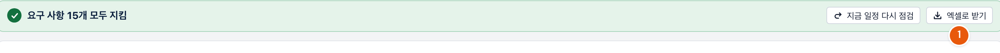
그림 7-5 요구 사항 점검 맨 위 줄의 「엑셀로 받기」 · 요구 사항 점검
7.6 확정 전 확인 목록
확정을 누르기 전에 다섯 가지를 확인합니다. 요약 카드에도 같은 목록이 있습니다.
확인할 것
어디서
1
요구 사항 점검에서 어긴 항목이 0개인가
현재 결과 분석 셋째 줄 · 고른 두 버전의 「요구 사항」 줄
2
1순위 목표가 「안」인가. 「넘음」이 있다면 받아들일 수 있는 정도인가
방침과 견주기 · 목표별 격차
3
구단별 보기에서 한 구단에 몰린 부담이 없는가
구단별 한눈에 · 구단별 보기
4
지정한 것(개막 2연전, 어린이날 홈, 홈 지정, 고정한 연전)이 그대로 들어갔는가
일정 자세히 보기의 달력
5
비교한 버전과의 「여기서 갈림」을 보고 이 버전을 고른 이유를 한 줄로 말할 수 있는가
고른 두 버전
다섯 가지가 모두 되면 확정을 누릅니다. 하나라도 안 되면 그 화면으로 돌아가 확인하고, 필요하면 방침을 바꿔 다시 실행합니다.
8. 시즌 중 다시 짜기
이 장에서 할 수 있는 일시즌 중 취소 경기와 남은 경기를 다시 넣는 기능이 무엇을 하게 될지 압니다.
지원 예정입니다. 지금 화면에서는 할 수 없고, 이 장은 무엇을 하게 될지만 적습니다.
무엇을 하나
1차 편성은 연전 단위로 구단당 135경기를 짭니다. 시즌 중 우천·폭염 등으로 열리지 못한 취소 경기와, 맞대결마다 하나씩 남겨 둔 잔여 경기(구단당 9경기)는 1차 편성 기간이 끝난 뒤 날짜 하나하나에 배정합니다. 결과는 「날짜마다 열리는 대진과 구장」입니다.
항목
내용
배정하는 것
잔여 경기 + 취소 경기
배정하는 기간
1차 편성 마지막 날의 다음 날부터, 운영자가 정한 날까지
취소 경기의 홈
원래 홈 구단 그대로. 날짜만 다시 정함
잔여 경기의 홈
홈 경기 수 원칙(격년 홈 73 / 71)대로
언제 짜나
1차 편성 기간이 모두 끝난 뒤 한 번에. 새 취소가 생기면 입력을 고쳐 다시 실행
반드시 지킬 규칙(예정)
한 구단은 하루 한 경기. 더블헤더 날만 같은 상대와 두 경기.
한 구장은 하루 한 대진. 잠실을 같이 쓰는 두 구단은 같은 날 둘 다 홈일 수 없음.
모든 경기를 기간 안에 배정.
쉬는 날 없이 이어서 경기하는 날 수의 상한(기본 6일).
구단당 더블헤더 상한(기본 2번. 0이면 더블헤더 없음).
좋은 일정의 기준(예정)
1차 편성의 운영 방침처럼 순서를 바꿀 수 있습니다. 기본 순서입니다.
구단별 마지막 경기일 맞추기 — 가장 늦게 끝나는 구단과 가장 먼저 끝나는 구단의 차이(기본 3일 이내)
이동 공정성 — 1차 편성과 재편성을 합한 144경기 전체의 이동 횟수·거리 격차
재편성으로 늘어나는 이동 거리 합계
월요일 경기 수 최소
더블헤더 수 최소
지금 할 수 있는 것
1차 편성 종료일은 2단계 시즌 기간·연전 묶음에서 정합니다(4.2). 시즌 종료일(기본 10월 31일)도 같은 2단계의 시즌 종료일 줄에서 바꿉니다. 재편성 기간의 공휴일은 3단계 공휴일 표 아래 「1차 편성 기간 밖(시즌 앞·재편성 기간) 공휴일 n일 더 보기」를 눌러 미리 적어 둘 수 있습니다.
이 기능이 들어오면 매뉴얼의 이 장이 절차로 바뀝니다. 14장의 연락처로 요청과 의견을 보내 주세요.
9. 이럴 때는
이 장에서 할 수 있는 일업무에서 마주치는 상황마다 어느 설정을 어디서 바꾸는지 찾습니다. 절차는 해당 장에 있습니다.
상황 → 설정 → 어느 장. 같은 설정이 여러 상황에 쓰이므로, 먼저 표에서 찾고 그 장으로 갑니다.
상황
설정
어디서
장
그날 꼭 그 구단이 홈이어야 할 때
홈 구장만 지정
3단계 주요 이벤트 일정 → 시즌 달력에서 그 날 → 고른 날
4.3
그날 꼭 그 대진이어야 할 때
대진까지 고정
같은 곳. 홈 구단과 상대를 함께 고름
4.3
이동 부담보다 주말 흥행의 공평이 중요할 때
주말·공휴일 격차 줄이기 우선
운영 방침·실행 → 우선순위
5.2
이동 거리를 횟수보다 먼저 보고 싶을 때
직접 정하기로 이동 거리를 1순위에
운영 방침·실행 → 지금 순위 ▲▼
5.2
한 목표의 격차를 더 줄이고 싶을 때
그 목표의 허용 수준을 좁힘
운영 방침·실행 → 목표마다 허용 수준
5.3
1순위가 자꾸 「넘음」으로 끝날 때
허용 수준을 조금 넓히거나, 지정·고정을 줄임
운영 방침·실행 → 목표마다 허용 수준 · 3단계 홈 구장 지정 · 시즌 띠의 고정
5.3 · 4.3 · 6.5 · 10장
결과 대부분은 좋은데 몇 연전만 바꾸고 싶을 때
연전 고정 또는 홈 지정 + 나머지 자동 편성
일정 자세히 보기 → 연전 기간 고정 띠
6.5
한 경기만 다른 날로 옮기고 싶을 때
옮기기… → 여기로, 그 뒤 검사하고 저장 또는 나머지 자동 편성
일정 자세히 보기 → 달력
6.5
KBO가 개막일·올스타전 날짜를 발표했을 때
2단계의 그 줄 수정
2단계 시즌 기간·연전 묶음
4.2
KBO가 개막 대진을 발표했는데 상대가 다를 때
개막 2연전 홈 줄 수정 → 상대 고르기
3단계 주요 이벤트 일정
4.3
임시 공휴일이 생겼을 때
공휴일·가중치 줄 수정 → 줄 추가
3단계 → 달력에서 수정 → 1 공휴일과 가중치
4.3
특정 공휴일을 더 무겁게 보고 싶을 때
그 날의 가중치를 올림
같은 곳
4.3
구장이 바뀌었을 때
있어요 — 고칠게요 → 구단 줄 → 구장 칸 Enter
1단계 구단 정보
4.1
구장 간 거리가 실제와 다를 때
도로거리 받기 또는 거리 칸 직접 고침
1단계 구단 정보 → 구단 카드
4.1
특정 기간만 연전을 다르게 묶고 싶을 때
달력 고치기 → 날짜 끌기, 묶음 누르기
2단계 → 반영 결과
4.2
같은 방침으로 다시 실행했는데 결과가 바로 나올 때
전에 낸 결과를 가져온 것. 조건·방침·시간 가운데 하나를 바꾸면 새로 짬
—
2.1
어느 결과를 확정할지 모르겠을 때
둘을 골라 고른 두 버전의 「여기서 갈림」을 읽음
실행 결과 비교
7.2
확정한 뒤 다른 결과로 바꾸고 싶을 때
다른 줄의 확정(전 확정은 풀림) 또는 확정 취소
실행 결과 비교
7.3
결과를 다른 사람에게 넘길 때
요구 사항 점검 → 엑셀로 받기, 또는 ⋯ → 내려받기
현재 결과 분석 · 실행 결과 비교
7.5
다른 컴퓨터에서 만든 결과를 같이 보고 싶을 때
받은 버전 올리기
실행 결과 비교
7.4
결과를 오래 남기고 싶을 때
이름 바꾸기(이름을 바꾼 결과는 지우지 않음)
실행 결과 비교 ⋯ 메뉴
7.4
특정 날 구장을 쓸 수 없을 때(대관 등)
지원 예정
—
8장·13장
시즌 중 취소 경기를 다시 넣을 때
지원 예정
—
8장
자주 겹치는 상황 둘
행사 때문에 그날 홈이어야 하고, 상대도 정해져 있을 때 — 대진까지 고정을 씁니다. 상대가 정해지지 않았으면 홈 구장만 지정으로 두고 상대는 자동 편성에 맡깁니다. 지정은 반드시 지킬 규칙이 되므로 꼭 필요한 날만 넣습니다.
결과는 마음에 드는데 한 구단의 7~8월 원정이 많을 때 — 구단별 보기에서 그 구단의 「7~8월 원정」을 확인하고, 일정 자세히 보기의 시즌 띠에서 7~8월의 몇 연전에 그 구단을 홈 지정한 뒤 나머지 자동 편성을 누릅니다. 나머지 연전은 자동 편성이 다시 짜므로 다른 격차가 조금 바뀔 수 있습니다.
10. 문제 해결
이 장에서 할 수 있는 일화면에 보이는 증상에서 원인을 찾고, 무엇을 하면 되는지 압니다.
증상 → 원인 → 대처. 화면에 적힌 글을 그대로 찾으세요. 여기 없는 증상은 14장의 연락처로 알려 주세요.
10.1 실행이 안 될 때
「이 방침으로 실행」이 눌리지 않는다
원인
사전 점검에 진행 불가 항목이 있습니다. 허용 수준 구역 아래에 「사전 점검에 진행 불가 n건이 있어 실행할 수 없습니다 — (항목 이름). 편성 조건 입력·검증으로 돌아가 고치세요.」가 보입니다
대처
단계 띠의 편성 조건 입력·검증으로 돌아가 아래 원인 가운데 해당하는 것을 고칩니다
줄 끝의 항목 이름(예: 「— 구장 간 거리 · 특별 경기 충돌」)을 아래 표에서 찾습니다.
원인
뜻
고치는 곳
구장 간 거리
거리가 빠진 구단 짝이 있어 이동 거리를 셀 수 없음
1단계 구단 정보 → 그 구단 카드의 거리표
연전 기간
연전 묶음이 만들어지지 않음
2단계 개막일·1차 편성 종료일
n연전 자리
시리즈 수가 그 길이(2·3·4연전)의 연전 기간 × 5보다 많음
2단계 달력 고치기로 묶음을 맞추거나 4단계 시리즈 규칙
같이 쓰는 구장 자리
잠실을 같이 쓰는 두 구단의 홈 시리즈가 같은 날 겹치게 됨
2단계 묶음 또는 4단계 격년 홈
특별 경기 충돌
같은 날 홈 지정이 5곳을 넘거나, 한 구단이 두 대진에 들어가거나, 같은 구장을 두 대진이 씀
3단계 → 달력에서 수정 → 2 홈 구장 지정
시리즈 목록 · 구단 수 짝수
시리즈를 만들지 못했거나 구단 수가 짝수가 아님
4단계 시리즈 규칙 · 1단계 구단 정보
「편성 조건 입력·검증을 먼저 마쳐 주세요」 · 「앞 단계의 편성 조건을 모두 확인해 주세요」
원인
네 단계 가운데 아직 ✓ 수락하지 않은 줄이나 답하지 않은 질문이 있습니다
대처
4단계 확인 화면의 「아직 검토할 편성 조건이 남았습니다」 줄에서 고치기로 그 단계에 가서 마칩니다. 1단계는 「바뀐 정보가 있나요?」에 답해야 합니다
「다음」 단추가 눌리지 않는다
원인
이 단계의 줄 가운데 ✓ 수락하지 않은 것이 있습니다. 3단계에서는 개막전 홈 구단이 전년도 순위와 달라도 막힙니다
대처
남은 줄을 ✓ 수락합니다. 개막전은 전년도 순위대로 되돌리기 ›를 누릅니다
「시험용 자동 편성 — 결과가 좋지 않습니다」 표시가 보인다
원인
편성 서버에 연결되지 않아 브라우저 안의 시험용 자동 편성을 씁니다. 결과가 나쁘고, 요구 사항 점검이 없고, 확정할 수 없습니다
대처
편성 서버 주소로 다시 엽니다. 연결이 되지 않으면 14장의 연락처로 알립니다
「자동 편성 오류: …」 · 「편성 실패 — …」
원인
편성 서버가 실행을 끝내지 못했습니다. 뒤에 붙은 글이 이유입니다
대처
한 번 더 실행합니다. 되풀이되면 뒤에 붙은 글과 함께 14장의 연락처로 알립니다
10.2 결과가 기대와 다를 때
실행이 끝났는데 목표가 「넘음」이다
원인
허용 수준이 너무 좁거나, 지정·고정이 많아 자동 편성이 찾을 여지가 적습니다. 2·3순위의 「넘음」은 1순위를 지키느라 내준 것일 수 있습니다
대처
방침과 견주기에서 어느 목표가 얼마나 넘었는지 봅니다. 1순위면 수준 다시 정하기로 허용을 조금 넓히거나, 3단계 홈 지정·시즌 띠의 고정을 줄입니다. 2·3순위면 받아들일지, 순서를 바꿀지 정합니다. 실행 시간을 늘려 보는 것도 됩니다
「실행이 끝났지만 반드시 지킬 규칙을 지키지 못해 저장하지 않았습니다.」
원인
자동 편성이 시간 안에 반드시 지킬 규칙을 모두 맞추지 못했습니다. 지정이 서로 부딪히거나 연전 묶음이 규칙과 다를 때 그렇습니다
대처
저장 이름 자리에 「규칙을 어겨 저장하지 않음」이 보입니다. 요구 사항 점검에서 어긴 항목을 보고, 3단계 지정과 2단계 묶음을 확인한 뒤 다시 실행합니다
「같은 조건으로 전에 실행한 결과를 바로 가져왔습니다.」
원인
편성 조건·운영 방침·실행 시간이 전과 모두 같아 새로 짜지 않았습니다. 고장이 아닙니다
대처
다른 결과를 원하면 허용 수준이나 실행 시간을 조금이라도 바꿉니다
「연전이 바뀌어 다시 실행해야 합니다」 · 「연전이 바뀌었습니다」
원인
2단계의 개막일·1차 편성 종료일·올스타 휴식기·연전 묶음을 고쳐 전 결과를 이 달력에 쓸 수 없습니다
대처
편성 조건 검토를 마치고 다시 실행합니다. 전 결과가 필요하면 실행 결과 비교의 불러오기로 가져옵니다. 그러면 편성 조건도 그 버전을 만들 때로 돌아갑니다
「편성 조건을 고친 뒤로 아직 실행하지 않아 지키지 못한 규칙이 보일 수 있습니다.」
원인
편성 조건을 고쳤지만 결과는 전 것입니다
대처
운영 방침·실행으로 ›를 눌러 다시 실행합니다. 편성 조건만 고쳤으면 이어서, 홈 지정을 바꿨으면 처음부터 짭니다
10.3 결과 고치기에서
「처음부터 다시 짤 수 없어 지금 일정에서 이어서 고칩니다.」
원인
고정한 연전이 많아 편성 서버가 고정한 채로 처음부터 시작하지 못했습니다. 지금 일정에서 이어서 풀었습니다
대처
결과를 보고 괜찮으면 그대로 씁니다. 더 바꾸고 싶으면 고정을 줄입니다
「고정한 연전이 많아 새로 짤 수 없습니다 · 고정을 줄여 보세요」
원인
고정한 연전이 너무 많아 이어서 풀기도 되지 않았습니다
대처
시즌 띠에서 고정을 풀고 다시 나머지 자동 편성을 누릅니다. 띠 아래 「새로 짤 연전 n개」가 적을수록 어렵습니다
「고정한 것끼리 위반이 있어 실행하지 않았습니다.」 · 「필수 규칙 위반 n건이 있어 저장하지 않았습니다.」
원인
고정한 연전·손으로 놓은 경기·홈 지정끼리 반드시 지킬 규칙이 어긋납니다
대처
열린 위반 목록의 그 자리로 ›로 가서 고정을 풀거나 경기를 다시 놓습니다
「홈 지정은 3연전에만 합니다.」 · 「한 연전에 홈 지정은 5구단까지입니다. 다른 구단을 먼저 빼세요.」
원인
홈 지정은 3연전에만, 한 연전에 다섯 구단까지입니다
대처
3연전 칸을 고르거나, 다른 구단의 지정을 먼저 뺍니다
10.4 비교·확정에서
「확정」 단추가 없는 줄이 있다
원인
「시험용 자동 편성」 표시가 붙은 버전은 편성 서버에 연결되지 않은 채 낸 결과라 확정할 수 없습니다
대처
편성 서버에 연결해 같은 방침으로 다시 실행합니다
「이 점검표는 지금 보이는 일정의 것이 아닙니다」 · 「다른 일정의 점검표」
원인
실행 뒤 일정을 고쳤거나, 다른 버전의 점검표입니다
대처
요구 사항 점검에서 지금 일정 다시 점검을 누릅니다
「저장 공간이 모자라 저장하지 못했습니다. 안 쓰는 결과를 지우세요.」
원인
결과를 저장할 자리가 모자랍니다
대처
실행 결과 비교의 ⋯ → 지우기로 안 쓰는 버전을 지웁니다. 남길 것은 먼저 내려받기로 받아 둡니다. 현재 결과 분석에 「저장하지 못함」이 보이면 지운 뒤 다시 저장을 누릅니다
「올리지 못했습니다 — …」
원인
올린 파일이 이 시즌의 버전 파일이 아니거나, 구단이 다르거나, 반드시 지킬 규칙을 지키지 못한 일정입니다
대처
뒤에 붙은 이유를 보고, 내려받기로 받은 파일 그대로를 올립니다
결과가 다른 컴퓨터에 보이지 않는다
원인
저장한 버전과 확정은 그 컴퓨터의 브라우저에 남습니다
대처
내려받기로 받은 파일을 다른 컴퓨터에서 받은 버전 올리기로 올립니다
10.5 그 밖에
화면의 글자·표가 잘려 보인다
원인
매치봇 스튜디오는 너비 1440 이상의 화면에 맞춰 만들었습니다
대처
브라우저 창을 넓히거나 화면 배율을 줄입니다
11. 규칙과 기준 목록
이 장에서 할 수 있는 일자동 편성이 반드시 지키는 규칙, 좋은 일정을 가리는 기준 넷, 모든 설정의 기본값과 범위를 한 곳에서 찾습니다.
규칙은 반드시 지키고, 기준은 운영 방침에 따라 견줍니다. 규칙을 어긴 결과는 저장되지 않습니다. 기준은 허용 수준을 넘어도 결과는 나오고 「넘음」으로 표시됩니다.
11.1 반드시 지키는 규칙
요구 사항 점검이 세는 항목입니다. 서버가 완성된 일정을 날짜별 경기로 풀어 항목마다 다시 셉니다. 편성 조건을 그대로 두면 15개이고(「요구 사항 15개 모두 지킴」), 3단계에서 홈 구장을 지정한 날을 더하면 그 날마다 한 항목씩 늘어납니다. 항목마다의 「정한 값」(편성 조건에서 정한 것)과 「출처」(기본값인지 운영자가 정한 것인지)는 엑셀로 받기로 받은 파일의 항목별 시트에 적힙니다(7.5).
아래 표의 묶음은 찾아보기 쉽게 나눈 것이고, 화면에는 항목 이름만 나옵니다.
묶음
항목
무엇을 보나
특별 경기
개막전
개막일 연전의 홈 구단(또는 대진)이 정한 대로인지
어린이날
어린이날이 든 연전의 홈 구단이 정한 5곳인지
(지정한 날 이름)
직접 더한 구장 지정: 그 날 연전의 홈 구단(또는 대진)이 정한 대로인지. 3단계에서 홈 구장을 지정한 날마다 하나씩 생김
경기 수
맞대결 경기 수
구단 두 곳이 맞붙는 경기 수가 모두 같은지
구단별 홈 경기 수
구단마다 1차 편성 홈 경기 수가 정한 값인지
날짜
휴식 요일
휴식 요일(보통 월요일)에 경기가 없는지. 예외로 정한 날은 뺌
휴식기
올스타 휴식기처럼 경기 없는 기간에 경기가 없는지
시즌 기간
모든 경기가 개막일부터 1차 편성 종료일 사이에 있는지
연전 길이
연전 길이
첫 연전만 짧을 수 있고(2연전), 나머지는 정한 길이 이상인지
시리즈와 기간의 길이
시리즈의 연전 수가 배정된 연전 기간의 연전 수와 같은지
후반기 첫 4연전
4연전 대진
후반기 첫 4연전이 개막 2연전과 같은 두 구단의 맞대결인지, 홈은 정한 대로인지
하루 단위
날마다 모든 구단 출전
경기가 있는 날마다 모든 구단이 꼭 한 번 출전하는지
구장마다 한 경기
같은 날 한 구장에서 경기가 둘 이상 잡히지 않았는지(같이 쓰는 구장은 두 구단을 합쳐서)
흐름
홈·원정 연속
구단마다 홈 또는 원정 연전이 4번 넘게 이어지지 않는지(최대 3연속)
같은 상대 연속
바로 앞 연전과 같은 상대를 잇달아 만나지 않는지
배정
날짜 없는 시리즈
모든 시리즈가 연전 기간에 배정되었는지
자동 편성이 일정을 만들 때 지키는 규칙도 같은 내용입니다. 연전 기간마다 모든 구단이 한 번씩 출전, 한 구장에 한 경기(같이 쓰는 구장은 한 곳으로), 홈 또는 원정 최대 3연속, 같은 대진 연속 금지, 지정한 날의 홈 구단.
11.2 좋은 일정의 기준 네 가지
운영 방침의 순서와 허용 수준으로 견주는 목표입니다. 5장.
기준
무엇을 세나
격차
허용 수준 기본값
이동 횟수 격차 줄이기
구단마다 연전을 날짜순으로 놓고, 앞 연전과 다른 구장에서 다음 연전을 하면 1회. 같은 구장이면 0회. 홈·원정 가리지 않고 시즌 합
가장 많이 옮긴 구단 − 가장 적게 옮긴 구단
4회
이동 거리 격차 줄이기
같은 순서로 앞 연전 구장에서 다음 연전 구장까지의 거리를 모두 더함(km)
가장 긴 구단 − 가장 짧은 구단
600km
주말·공휴일 홈 격차 줄이기
홈 연전에 든 날마다 점수를 매겨 더함. 토·일 1점, 공휴일 2점, 어린이날 3점, 평일 0점. 공휴일이 주말과 겹치면 큰 쪽 하나만. 원정 0점
가장 높은 구단 − 가장 낮은 구단
3점
전체 이동 거리 줄이기
10구단이 옮겨 간 거리를 모두 더한 값(km)
격차 아님. 리그 전체 합
없음. 언제나 마지막 순위
격차는 평균과의 거리가 아니라 양 끝 두 구단의 차이입니다.
허용 수준 이하이면 「안」, 크면 「넘음」입니다. 넘으면 자동 편성은 넘은 만큼을 줄이려 노력하고, 조금 넘은 것보다 많이 넘은 것을 훨씬 무겁게 봅니다.
2027 달력은 주말·공휴일 점수 합이 10구단에 똑같이 나뉘지 않아 격차가 1점 밑으로 내려가지 않습니다.
11.3 모든 설정의 기본값과 범위
편성 조건(4장)
설정
기본값
범위·조건
어디서
구단 이름·구장·위치
2025 구단 정보에 LG·두산 구장만 고침(서울 올림픽 주경기장)
위도·경도는 구장 이름 찾기 또는 지도에서 찍기로만
1단계
구장 간 거리
기본 구장 목록의 거리. 「추정」 = 직선거리 × 도로계수, 「도로」 = 길찾기 도로거리
km, 직접 고칠 수 있음
1단계
쉬는 요일
월요일
요일 단추로 여러 개
2단계
개막일
3월 넷째 토요일(2027-03-27)
토요일만
2단계
올스타 휴식기
7월 둘째 금요일부터 6일
시작 날짜와 길이(일)
2단계
후반기 첫 4연전
휴식기 바로 뒤 목~일
휴식기를 옮기면 따라 옮김
2단계
1차 편성 종료일
자동 — 필요한 경기일이 되는 첫 일요일(2027은 9/5)
날짜 직접 또는 「자동으로」
2단계
시즌 종료일
10월 31일
재편성 기간의 끝. 4단계 확인에 보임
2단계
연전 묶음
규칙대로 자동(3연전 중심, 개막 2연전, 후반기 첫 4연전)
달력 고치기로 2·3·4연전 묶음 직접
2단계
홈 경기 수(격년 홈)
홈 73경기 5구단 / 71경기 5구단. 2027 = 홀수 해 묶음
구단 단추로 바꿈, 쓰지 않기 가능
2단계 홈 경기 수 줄 수정 · 4단계 시리즈 규칙
개막 2연전 홈
전년도 상위 5구단(잠실은 하나만). 상대는 발표 전 예상값(시범 운영용)
홈 구단 고정, 상대만 고름(다섯 상대 모두)
3단계
어린이날 홈
홀수 해 묶음 5구단(두산·LG 중 하나). 발표 전 예상값(시범 운영용)
5곳 모두
3단계
공휴일
정부 공휴일 달력
줄 추가·지우기, 법정 공휴일 채우기
3단계 수정 화면
공휴일 가중치
공휴일 2, 어린이날 3. 주말 1은 고정
0~10 정수
3단계 수정 화면
휴식 요일 공휴일의 경기(「월 경기」)
꺼짐
켜면 그 주 목요일 휴식
3단계 수정 화면
홈 구장 지정
개막전·어린이날만
아무 날, 하루 5곳까지(개막전·어린이날은 5곳 모두), 홈 구장만 / 대진까지
3단계 시즌 달력
맞대결 경기 수
16
숫자
4단계 시리즈 규칙
그중 1차 편성
15
숫자. 바꾸면 1차 편성 종료일이 따라감
4단계 시리즈 규칙
1차 편성 홈(많은 쪽)
9
숫자
4단계 시리즈 규칙
연전 최소 길이
3
개막 2연전·후반기 첫 4연전 말고는 이 길이 이상
4단계 시리즈 규칙
후반기 첫 4연전 홈
개막전 홈 구단 그대로
「홈 바꿈」이면 상대 구장
4단계 시리즈 규칙
운영 방침·실행(5장)
설정
기본값
범위·조건
어디서
우선순위
이동 격차 줄이기 우선(이동 횟수 → 이동 거리 → 주말·공휴일 → 전체 이동 거리)
카드 둘 또는 직접 정하기(1~3순위만, 전체 이동 거리는 늘 마지막)
운영 방침·실행
이동 횟수 허용 수준
4회
0 이상, 1회씩
운영 방침·실행
이동 거리 허용 수준
600km
0 이상, 50km씩
운영 방침·실행
주말·공휴일 허용 수준
3점
0 이상, 1점씩. 0이어도 격차는 1점까지
운영 방침·실행
실행 시간
2분
1~5분. 절반 동안 나아지지 않으면 먼저 끝남
아래 줄
처음부터 / 이어서
자동
방침만 바꾸면 처음부터, 편성 조건을 고치면 이어서, 홈 지정을 바꾸면 처음부터
—
결과 고치기(6.5)
설정
기본값
범위·조건
어디서
연전 고정
없음
칸·여러 칸·달 전체
일정 자세히 보기 시즌 띠
홈 지정(결과에서)
없음
3연전에만, 한 연전에 5구단까지
시즌 띠 「홈 지정」
손으로 놓은 경기
없음
고정한 연전으로는 못 옮김
달력 「옮기기…」
나머지 자동 편성 시간
1분
고정
시즌 띠 아래
저장·확정(7장)
항목
값
저장 이름
#번호_방침_허용 수준(예: #0003_이동격차_4회_600km_3점). 결과 고치기는 「_직접고침」·「_고정후새로짜기」가 더 붙음
저절로 남는 수
이름을 바꾸지 않은 결과는 최근 8개
저장하지 않는 것
반드시 지킬 규칙을 어긴 결과
비교
두 개까지
확정
해마다 하나. 시험용 자동 편성 결과는 불가. 확정한 버전은 지울 수 없음
「차이 작음」
1위와 2위가 전체 이동 거리 3,000km 미만 차이일 때
12. 용어 풀이
이 장에서 할 수 있는 일화면과 이 매뉴얼에 나오는 말의 뜻을 찾습니다. 가나다순입니다.
말
뜻
격차
한 목표에서 가장 많은 구단의 값 − 가장 적은 구단의 값. 평균과의 거리가 아니라 양 끝 두 구단의 차이
고정
결과 고치기에서 연전 기간의 대진을 그대로 두는 것. 고정한 연전은 「나머지 자동 편성」과 그 뒤의 실행에서 바뀌지 않음. 시즌 띠에서 풂
기본 제공
처음부터 들어 있는 버전(「2027 기본안」·「2027 2순위 대진안」). 실행 결과 비교에 늘 함께 줄 서고, 확정할 수 있음
남김
이름을 바꾼 결과에 붙는 표시. 최근 8개 밖으로 밀려도 지우지 않음
대진까지 고정
홈 구장 지정의 한 방식. 그 날 홈 구단과 상대까지 정함. 자동 편성은 그 시리즈를 고정함
반드시 지킬 규칙
일정이라면 꼭 갖춰야 하는 조건. 어느 방침이든 지키고, 어긴 결과는 저장하지 않음. 11.1
방침과 견주기
현재 결과 분석 맨 위 줄. 목표마다 「허용 안」 또는 「n 넘음」
버전
저장된 결과 하나. 실행할 때마다 저절로 저장되고, 실행 결과 비교에 쌓임
손으로 놓은 경기
결과 고치기에서 「옮기기…」로 운영자가 자리를 정한 경기. 「손」 표시가 붙고 그 자리에 고정됨
수락
편성 조건의 추정값이 맞다고 답하는 것. 2·3단계 줄마다 「✓ 수락」
시험용 자동 편성
편성 서버에 연결되지 않았을 때 브라우저 안에서 도는 자동 편성. 결과가 좋지 않고 확정할 수 없음
안 · 넘음
격차가 허용 수준 이하이면 「안」, 크면 「넘음」
여기서 갈림
실행 결과 비교의 「고른 두 버전」에서 처음으로 승부가 난 줄에 붙는 표시. 그 줄이 두 버전의 순위를 가름
연전
같은 두 구단이 이어서 하는 경기 묶음(2·3·4연전). 자동 편성은 연전 단위로 짬
연전 기간
달력에서 연전 하나가 들어가는 날짜 묶음. 2027은 45개 안팎. 연전 기간마다 다섯 경기가 열림
요구 사항 점검
서버가 완성된 일정을 날짜별 경기로 풀어 반드시 지킬 규칙을 항목마다 다시 센 판정. 자동 편성의 점수와 따로 셈
우선순위
어느 격차를 먼저 줄일지의 순서. 1순위가 허용 안에 들면 2순위를 봄. 전체 이동 거리는 늘 마지막
운영 방침
우선순위와 허용 수준을 합쳐 부르는 말. 「이동 격차 줄이기 우선」, 「주말·공휴일 격차 줄이기 우선」, 「직접 정한 순서」
운영자
이 매뉴얼의 독자. 편성 조건을 확인하고, 운영 방침을 정해 실행하고, 결과를 비교해 확정하는 사람
일정 자세히 보기
현재 결과 분석의 세부 화면. 달력 · 홈/원정 흐름 · 상대별 경기 수 탭과, 맨 위의 결과 고치기 띠
1차 편성
시즌 시작부터 1차 편성 종료일까지 연전 단위로 짜는 일정. 맞대결마다 15경기, 구단당 135경기. 남은 경기는 재편성에서
자동 편성
매치봇 스튜디오가 편성 조건과 운영 방침에 따라 일정을 만드는 일. 반드시 지킬 규칙을 모두 지키는 일정 가운데 방침에 맞는 더 나은 것을 찾음
재편성
1차 편성 기간 뒤에 취소 경기와 잔여 경기를 날짜마다 배정하는 일. 지원 예정. 8장
전체 이동 거리
10구단이 옮겨 간 거리를 모두 더한 값. 격차가 아니라 합. 허용 수준이 없고 늘 마지막 순위
지정
꼭 이렇게 되어야 한다고 정해 두는 것. 개막 2연전 대진, 어린이날 홈, 홈 구장 지정, 결과에서의 연전 고정·홈 지정. 반드시 지킬 규칙이 됨
추정
KBO 발표 전이라 예상으로 넣은 값. 「추정 · 확정 아님」 표시가 붙고, 운영자가 수락하거나 수정해야 함
허용 수준
목표마다 「이만큼 격차는 괜찮다」고 정하는 값. 이하이면 「안」. 「이 목표는 여기까지만 맞추고 다음 목표로 넘어가라」는 선
확정
한 버전을 그 해의 시즌 일정으로 정하는 것. 해마다 하나. 처음 화면의 「결과 확인」에 나옴. 「확정 취소」로 되돌림
홈 구장 지정
특정 날 홈 경기를 할 구단을 정하는 것. 「홈 구장만 지정」(상대는 자동 편성) 또는 「대진까지 고정」
홈 지정(결과에서)
결과 고치기의 시즌 띠에서 3연전의 홈 구단을 정하는 것. 편성 조건의 홈 구장 지정과 같은 효력
홈/원정 흐름
구단마다 한 줄 띠로 홈·원정 연전의 순서를 보여 주는 보기. 오른쪽 끝에 구단마다 가장 길게 이어진 홈·원정(최장 연속)
13. 자주 묻는 질문
이 장에서 할 수 있는 일설명회에서 자주 나온 질문의 답을 찾습니다. 더 자세한 것은 해당 장으로 갑니다.
1. 같은 조건인데 왜 결과가 조금씩 다른가요?
고장이 아닙니다. 자동 편성은 정해진 시간 안에 더 나은 일정을 찾아가는 방식이라, 같은 조건이라도 찾아간 길이 다르면 숫자가 조금 다를 수 있습니다. 화면도 「같은 방침으로 다시 실행해도 숫자는 달라질 수 있습니다」라고 적고 있습니다.
그래서 결과 하나를 보고 정하지 않고, 여러 번 실행해 실행 결과 비교에서 고릅니다. 전체 이동 거리에서만 갈리고 차이가 작으면 「다시 실행하면 뒤집힐 수 있음」이 붙으니, 그 차이로는 고르지 않습니다. 7.2.
편성 조건·운영 방침·실행 시간이 전과 모두 같으면 새로 짜지 않고 전에 낸 결과를 바로 가져오기도 합니다. 「같은 조건으로 전에 실행한 결과를 바로 가져왔습니다.」라고 알려 줍니다.
2. 실행 시간을 늘리면 결과가 더 좋아지나요?
조금은 그렇지만, 한없이 좋아지지는 않습니다. 자동 편성은 절반 동안 나아지지 않으면 최대 시간 전에 끝납니다. 2분이면 대부분 그 안에 끝나고, 5분으로 늘려도 같은 결과가 나오는 때가 많습니다.
결과를 바꾸는 것은 시간보다 운영 방침입니다. 「넘음」이 있으면 허용 수준을 조금 옮기거나 순서를 바꿔 다시 실행하는 쪽이 낫습니다. 5.4.
3. 허용 수준을 0으로 두면 어떻게 되나요?
그 목표를 반드시 맞추려 하고 다른 목표를 내줍니다. 화면에 「이 목표를 반드시 맞추려 하고 다른 목표를 내줍니다」라고 안내합니다.
이동 횟수는 0으로 맞출 수 있지만, 그 대신 전체 이동 거리가 늘고 주말·공휴일 격차가 벌어집니다.
주말·공휴일은 2027 달력에서 점수 합이 10구단에 똑같이 나뉘지 않아 격차가 1점까지만 내려갑니다. 0으로 두어도 됩니다. 1점까지 맞춥니다.
너무 좁으면 끝까지 못 들어와 「넘음」인 채로 끝날 수 있습니다. 반드시 지킬 규칙이 아니라 결과는 나옵니다.
기본값으로 한 번 실행하고 결과를 본 뒤 조금씩 옮기는 것이 쉽습니다. 5.3.
4. 확정한 뒤에도 바꿀 수 있나요?
네. 확정은 「이 버전을 시즌 일정으로 쓴다」는 표시이지, 결과를 잠그는 것이 아닙니다.
다른 버전의 확정을 누르면 「지금 확정한 「…」 대신 …」으로 묻고, 확인하면 확정이 그쪽으로 옮겨 갑니다.
확정 취소를 누르면 확정만 풀리고 버전은 남습니다.
확정한 버전은 지울 수 없습니다. 지우려면 먼저 확정을 취소합니다. 7.3.
5. 특정 날 구장을 쓸 수 없으면 어떻게 하나요?
지원 예정입니다. 지금은 「그 날 그 구장을 쓰지 않는다」는 설정이 없습니다.
지금 할 수 있는 것은 반대 방향입니다. 그 구단을 뺀 다른 다섯 구단을 그 날 홈 구장 지정으로 홈에 두면, 그 구단은 원정이 됩니다(하루 5곳까지라 다섯 곳을 모두 지정해야 합니다). 4.3. 결과가 나온 뒤라면 일정 자세히 보기의 시즌 띠에서 그 연전에 다른 구단을 홈 지정하고 나머지 자동 편성을 누릅니다. 6.5.
6. 편성 서버 없이도 쓸 수 있나요?
시험용으로만 됩니다. 편성 서버에 연결되지 않으면 「시험용 자동 편성 — 결과가 좋지 않습니다」 표시가 보이고, 브라우저 안의 시험용 자동 편성이 돕니다. 편성 조건 검토와 화면 익히기는 되지만, 결과가 좋지 않고, 요구 사항 점검이 없고, 그 결과는 확정할 수 없습니다. 10.1.
14. 도움 받는 곳·의견 보내기
이 장에서 할 수 있는 일막혔을 때 어디에 물을지, 고치고 싶은 점을 어떻게 보낼지 압니다.
문의와 의견은 스케쥴랩으로 보냅니다.
문의처
스케쥴랩
이메일
admin@everyshift.co.kr
물어보기 전에
화면의 알림·표시 글을 그대로 10장 「문제 해결」에서 찾아봅니다.
상황으로 찾으려면 9장 「이럴 때는」, 말뜻은 12장 「용어 풀이」입니다.
그래도 안 되면 아래를 적어 보냅니다.
문의할 때 적을 것
어느 화면에서(단계 띠의 이름, 예: 운영 방침·실행)
무엇을 눌렀는지
화면에 보인 글 그대로(알림, 「…」 표시)
그때의 결과 이름(예: #0003_이동격차_4회_600km_3점). 결과를 함께 보내려면 실행 결과 비교 → ⋯ → 내려받기로 받은 파일을 붙입니다.
의견·개선 요청
화면의 글이 어렵거나, 단추 자리가 불편하거나, 없는 기능이 필요하면 같은 주소로 보냅니다.
지원 예정으로 적힌 것(시즌 중 다시 짜기, 특정 날 구장 사용 불가)은 요청이 많은 순으로 만듭니다. 어떤 상황에서 필요한지 적어 주시면 그대로 설계에 씁니다.
이 매뉴얼에서 화면과 다른 곳을 찾으면 쪽수와 함께 알려 주세요. 다음 판에 고칩니다.
요약 카드
매뉴얼과 따로 1~2쪽 요약 카드가 있습니다. 한 바퀴 순서와 확정 전 확인 목록만 담아, 시즌 직전에 복습할 때 씁니다. 책상에 두고 쓰도록 만들었습니다.
매치봇 스튜디오 요약 카드
한 바퀴 순서와 확정 전 확인 목록. 시즌 직전 복습용. 자세한 절차는 운영 매뉴얼 3~7장.
한 바퀴
단계 띠
할 일
누르는 것
처음 화면
새 계획 시작
새 계획 만들기 → 검토 시작(결과가 있으면 편성 조건 검토하기)
1 편성 조건 입력·검증
1단계 구단 정보
바뀐 곳 없으면 ✓ 없어요 — 그대로
2단계 시즌 기간·연전 묶음
「추정」 줄 셋(개막일 · 올스타 휴식기 · 1차 편성 종료일)을 읽고 ✓ 수락 / 수정
3단계 주요 이벤트 일정
개막 2연전 홈 · 어린이날 홈(발표 전 예상값)을 확인하고 ✓ 수락 / 수정. 꼭 홈이어야 할 날은 달력에서 그 날을 눌러 홈 구장 지정
4단계 확인
「검토 완료 · 4 / 4 확인」 → 다음: 운영 방침·실행
2 운영 방침·실행
방침 정하기
우선순위 카드 고르기(기본 이동 격차 줄이기 우선) · 목표마다 허용 수준(기본 4회 · 600km · 3점) · 실행 시간(기본 2분)
실행
이 방침으로 실행 → 「찾는 중…」 → 끝나면 저절로 저장
3 현재 결과 분석
읽는 순서
① 요구 사항 점검 「모두 지킴」 → ② 방침과 견주기 「안」·「넘음」 → ③ 구단별 보기 몰린 부담 → ④ 일정 자세히 보기 달력
다시 실행
「넘음」이 마음에 안 들면 운영 방침 바꿔 다시 실행. 몇 연전만 바꾸려면 시즌 띠에서 고정/홈 지정 → 나머지 자동 편성
4 실행 결과 비교
고르기
비교 칸에 둘 표시 → 고른 두 버전에서 「같다고 봄」 지나 「여기서 갈림」 줄 읽기
확정
줄 오른쪽 확정 → 확인. 되돌리기는 확정 취소
결과는 방침에 따라 달라집니다. 어느 격차를 먼저 줄일지, 어느 결과를 쓸지는 운영자가 정합니다.
확정 전 확인 목록
확인할 것
어디서
☐ 1
요구 사항 점검에서 어긴 항목이 0개인가
현재 결과 분석 셋째 줄 · 고른 두 버전 「요구 사항」 줄
☐ 2
1순위 목표가 「안」인가. 「넘음」이 있다면 받아들일 수 있는 정도인가
방침과 견주기 · 목표별 격차
☐ 3
구단별 보기에서 한 구단에 몰린 부담이 없는가
구단별 한눈에 · 구단별 보기
☐ 4
지정한 것(개막 2연전, 어린이날 홈, 홈 지정, 고정한 연전)이 그대로 들어갔는가
일정 자세히 보기 달력
☐ 5
비교한 버전과의 「여기서 갈림」을 보고 이 버전을 고른 이유를 한 줄로 말할 수 있는가
고른 두 버전
한 줄 예: 「n순위까지는 둘 다 허용 안이라 같다고 보았고, ○○에서 이쪽이 앞서 이 버전을 골랐다.」